СП 511.1325800.2022 «Посадочные площадки. Правила проектирования»
О документе: разработчики, утверждение, регистрация, ключевые слова
СВОД ПРАВИЛ
Издание официальное
1 ИСПОЛНИТЕЛИ - Акционерное общество «Центральный научноисследовательский и проектно-экспериментальный институт промышленных зданий и сооружений -ЦНИИПромзданий» (АО «ЦНИИПромзданий»), Федеральное государственное унитарное предприятие «Государственный проектно-изыскательский и научно-исследовательский институт гражданской авиации «Аэропроект» (ФГУП ГПИ и НИИ ГА «Аэропроект»)
2 ВНЕСЕН Техническим комитетом по стандартизации ТК 465 «Строительство»
3 ПОДГОТОВЛЕН к утверждению Департаментом градостроительной деятельности и архитектуры Министерства строительства и жилищнокоммунального хозяйства Российской Федерации (Минстрой России)
4 УТВЕРЖДЕН приказом Министерства строительства и жилищнокоммунального хозяйства Российской Федерации от 10 февраля 2022 г. № 90/пр и введен в действие с 11 марта 2022 г.
5 ЗАРЕГИСТРИРОВАН Федеральным агентством по техническому регулированию и метрологии
6 ВВЕДЕН ВПЕРВЫЕ
В случае пересмотра (замены) или отмены настоящего свода правил соответствующее уведомление будет опубликовано в установленном порядке. Соответствующая информация, уведомление и тексты размещаются также в информационной системе общего пользования - на официальном сайте разработчика (Минстрой России) в сети Интернет
© Минстрой России, 2022
Настоящий нормативный документ не может быть полностью или частично воспроизведен, тиражирован и распространен в качестве официального издания на территории Российской Федерации без разрешения Минстроя России
Дата введения - 2022-03-11
УДК [625.717]
ОКС 93.120
Ключевые слова: посадочная площадка, взлетно-посадочная полоса, рулежная дорожка, вертолет, самолет, воздушное судно, визуальные средства
ИСПОЛНИТЕЛЬ
АО «ЦНИИПромзданий»
Руководитель разработки Генеральный директор
Исполнитель Заместитель директора
генерального
Н.Г. Келасьев
Д.К. Лейкина
Введение
Настоящий свод правил разработан в целях обеспечения соблюдения требований Федерального закона от 30 декабря 2009 г. № 384-ФЗ «Технический регламент о безопасности зданий и сооружений» и с учетом требований Федеральных законов от 27 декабря 2002 г. № 184-ФЗ «О техническом регулировании», от 22 июля 2008 г. № 123-ФЗ «Технический регламент о требованиях пожарной безопасности», от 29 июня 2015 г. № 162-ФЗ «О стандартизации в Российской Федерации».
Свод правил разработан авторским коллективом АО «ЦНИИПромзданий» (руководитель темы - канд. техн. наук Н.Г. Келасьев , И.П. Потапов ), ФГУП ГПИ и НИИ ГА «Аэропроект» (руководитель темы - канд. техн. наук М.Д. Суладзе , канд. техн. наук Н.С. Ледовская , канд. техн. наук В.А. Сабуренкова , Ю.Б. Скоробогатая, В.В. Морозов, Э.С. Цопанов, М.В. Годынский, И.В. Орехов, В.А. Хохлов ).
Landing sites. Design rules
1Область применения
Настоящий свод правил устанавливает требования к проектированию и распространяется на вновь строящиеся и реконструируемые посадочные площадки, расположенные на территории Российской Федерации, в том числе на нефтегазовых месторождениях и других труднодоступных территориях, предназначенные для регулярных или эпизодических полетов воздушных судов гражданской авиации Российской Федерации.
2Нормативные ссылки
В настоящем своде правил использованы нормативные ссылки на следующие документы:
ГОСТ 22283-2014 Шум авиационный. Допустимые уровни шума на территории жилой застройки и методы его измерения
СП 47.13330.2016 «СНиП 11-02-96 Инженерные изыскания для строительства. Основные положения» (с изменением № 1)
СП 121.13330.2019 «СНиП 32-03-96 Аэродромы»
СП 488.1325800.2020 Аэродромы и посадочные площадки с покрытиями облегченного типа
Примечание - При пользовании настоящим сводом правил целесообразно проверить действие ссылочных документов в информационной системе общего пользования - на официальном сайте федерального органа исполнительной власти в сфере стандартизации в сети Интернет или по ежегодному информационному указателю «Национальные стандарты», который опубликован по состоянию на 1 января текущего года, и по выпускам ежемесячного информационного указателя «Национальные стандарты» за текущий год. Если заменен ссылочный документ, на который дана недатированная ссылка, то рекомендуется использовать действующую версию этого документа с учетом всех внесенных в данную версию изменений. Если заменен ссылочный документ, на который дана датированная ссылка, то рекомендуется использовать версию этого документа с указанным выше годом утверждения (принятия). Если после утверждения настоящего свода правил в ссылочный документ, на который дана датированная ссылка, внесено изменение, затрагивающее положение, на которое дана ссылка, то это положение рекомендуется применять без учета данного изменения. Если ссылочный документ отменен без замены, то положение, в котором дана ссылка на него, рекомендуется применять в части, не затрагивающей эту ссылку. Сведения о действии сводов правил целесообразно проверить в Федеральном информационном фонде стандартов.
3Термины, определения и сокращения
В настоящем своде правил применены термины согласно СП 121.13330, а также следующие термины с соответствующими определениями:
- 3.1.1 боковая полоса безопасности
- Специально подготовленный участок летной полосы, примыкающий к боковой границе взлетно-посадочной полосы, предназначенный для обеспечения безопасности при взлете и посадке воздушных судов.
- 3.1.2 защитная зона
- Установленная зона на поверхности посадочной площадки для вертолетов вокруг мест стоянки, предназначенная для уменьшения опасности нанесения вертолетами повреждения в случае их непреднамеренного перемещения за пределы стоянки.
- 3.1.3 зона безопасности
- Определенный участок посадочной площадки для вертолетов вокруг зоны конечного этапа захода на посадку и взлета, свободный от препятствий, кроме препятствий, по своему функциональному назначению необходимых аэронавигации, и предназначенный для уменьшения опасности повреждения вертолетов в случае непреднамеренного выхода за пределы FATO.
- 3.1.4зона конечного этапа захода на посадку и взлета; (FАТО)
- Установленная зона, над которой выполняется конечный этап маневра захода на посадку до режима висения или посадка и с которой начинается маневр взлета.Источник: 2, приложение 14, том II, пункт 1.1
- 3.1.5 зона прерванного взлета
- Определенная зона на поверхности посадочной площадки для вертолетов, пригодная для осуществления прерванного взлета вертолетами.
- 3.1.6 зона приземления и отрыва; TLOF
- Определенная зона на поверхности посадочной площадки для вертолетов, на которой вертолет может выполнять непосредственно приземление (до касания с поверхностью) или отрыв от поверхности.
- 3.1.7 зона FATO типа ВПП
- Зона FATO, по геометрическим характеристикам аналогичная ВПП.
- 3.1.8 контрольная точка посадочной площадки
- Точка, определяющая географическое положение посадочной площадки.
- 3.1.9 маршрут руления вертолета
- Определенная траектория, установленная для передвижения вертолетов из одной части посадочной площадки для вертолетов в другую.
- 3.1.10 место стоянки вертолета
- Определенная площадь поверхности посадочной площадки, предназначенная для размещения вертолета в целях посадки и высадки пассажиров, погрузки или выгрузки почты или других грузов, заправки, стоянки или технического обслуживания, а в тех случаях, когда предполагается выполнение руления по воздуху - для ее использования в качестве TLOF.
- 3.1.11 воздушный маршрут руления вертолета
- Обозначенный маршрут руления, предназначенный для руления по воздуху.
- 3.1.12 наземный маршрут руления вертолета
- Маршрут руления, проходящий по осевой линии рулежной дорожки.
- 3.1.13посадочная площадка
- Участок земли, льда, поверхности сооружения, в том числе поверхности плавучего сооружения, либо акватория, предназначенные для взлета, посадки или для взлета, посадки, руления и стоянки воздушных судов.Источник: 1, статья 40, пункт 7
- 3.1.14 посадочная площадка для самолетов
- Посадочная площадка, предназначенная для взлета, посадки или для взлета, посадки, руления и стоянки самолетов.
- 3.1.15 посадочная площадка для вертолетов
- Посадочная площадка, предназначенная для взлета, посадки или для взлета, посадки, руления и стоянки вертолетов.
- 3.1.16 препятствие в районе посадочной площадки
- Все неподвижные (временные или постоянные) и подвижные объекты или их части, которые размещены в зоне, предназначенной для наземного движения воздушных судов, или возвышаются над установленной поверхностью, предназначенной для защиты воздушных судов в полете, или находятся вне таких установленных поверхностей и по результатам оценки представляют опасность для аэронавигации.
- 3.1.17 рулежная дорожка для вертолетов
- Определенная траектория на поверхности посадочной площадки для вертолетов, предназначенная для наземного движения вертолетов, которая может быть объединена с воздушным маршрутом руления, что позволяет выполнять руление как по земле, так и по воздуху.
- 3.1.18 удлиненная зона
- Зоны TLOF или FATO, длина которых более чем в два раза превышает их ширину. В настоящем своде правил применены следующие сокращения: APAPI - упрощенный указатель траектории точного захода на посадку; ASPSL - набор сегментированных точечных источников света; D в - диаметр несущего винта вертолета; D -диаметр, равный длине вертолета с вращающимися винтами, наибольший габаритный размер вертолета во время вращения винта (винтов), равный расстоянию от передней оконечной точки плоскости вращения несущего винта до задней оконечной точки плоскости вращения хвостового винта либо до задней точки конструкции вертолета; FATO - зона конечного этапа захода на посадку и взлета; HAPI - указатель траектории захода на посадку вертолета; LP - люминесцентные блоки; OFZ -зона, свободная от препятствий; PAPI - указатель траектории точного захода на посадку; TLOF - зона приземления и отрыва; АМИС - автоматизированная метеорологическая система; АРП - автоматический радиопеленгатор; БЛА - беспилотный летательный аппарат; БПБ - боковая полоса безопасности; ВГП -внутренняя горизонтальная поверхность; ВМУ - визуальные метеорологические условия; ВПП - взлетно-посадочная полоса; ВС - воздушное судно; ГП -горизонтальная поверхность; ЗП -поверхность захода на посадку; КДП - командно-диспетчерский пункт; КЛ - кабельные линии; КП - коническая поверхность; КУР - курсовые углы радиостанции; ЛП - летная полоса; ЛЭП - линии электропередач; МОД - метеорологическая оптическая дальность; МС - место стоянки; ОВЧ - очень высокие частоты; ОПРС - отдельная приводная радиостанция; ПВ -поверхность взлета; ПВП -правила визуальных полетов; ПМПУ - посадочный магнитный путевой угол; ПП - переходная поверхность; ППП -правила полетов по приборам; РД - рулежная дорожка; РЛЭ - руководство по летной эксплуатации; СПЗ - служебно-пассажирское здание; ССО -светосигнальное оборудование; УВД - управление воздушным движением; ЦЭС - централизованное электроснабжение.
4Общие положения по проектированию посадочных площадок
- самолетов;
- вертолетов.
5Планировочная организация земельного участка при размещении посадочных площадок
Следует, по возможности, исключать размещение посадочных площадок или их отдельных элементов на особо охраняемых природных территориях или предусматривать дополнительные инженерные мероприятия, позволяющие обеспечивать безопасный уровень воздействия на них.
СП 1325800.2022
- обеспечения безопасности полетов;
- допустимого уровня авиационного шума;
- допустимой концентрации загрязняющих веществ в атмосферном воздухе;
- допустимого уровня электромагнитного излучения от передающих радиотехнических средств, устанавливаемых на посадочной площадке.
Посадочные площадки для самолетов
Посадочные площадки для самолетов, предназначенные для коммерческих воздушных перевозок и выполнения авиационных работ
- летные полосы, в том числе ВПП с искусственным покрытием и (или) грунтовые;
- рулежные дорожки;
- перроны;
- места стоянки ВС.
При необходимости в составе элементов посадочных площадок для самолетов могут предусматриваться:
- площадки специального назначения;
- свободные зоны.
Класс посадочной площадки для самолетов определяется классом ее ВПП.
Класс ВПП посадочной площадки для самолетов определяется исходя из длины ВПП в стандартных условиях по таблице 5.1.
При наличии на посадочной площадке для самолетов двух и более ВПП, класс посадочной площадки определяется классом ВПП, с наибольшей длиной в стандартных условиях.
Таблица 5.1
| Показатель | Класс ВПП посадочной площадки для самолетов | Класс ВПП посадочной площадки для самолетов | Класс ВПП посадочной площадки для самолетов | Класс ВПП посадочной площадки для самолетов | Класс ВПП посадочной площадки для самолетов | Класс ВПП посадочной площадки для самолетов |
|---|---|---|---|---|---|---|
| А | Б | В | Г | Д | Е | |
| Длина ВПП в стандартных условиях не менее, м | 3200 | 2600 | 1800 | 1300 | 1000 | 500 |
Примечание -Стандартные условия определяются сочетанием стандартных атмосферных условий: температура воздуха 15 С, атмосферное давление 101325 Па (760 мм.рт.ст.), относительная влажность воздуха 0 % с нулевым превышением над уровнем моря, отсутствием ветра и нулевым уклоном ВПП.
Посадочные площадки с ВПП длиной менее 500 м -неклассифицированные.
60 м -для ВПП класса А;
45 м -для ВПП класса Б;
42 м -для ВПП класса В;
35 м -для ВПП класса Г;
28 м -для ВПП класса Д;
21 м -для ВПП класса Е;
18 м -для неклассифицированных ВПП 1)
Размер ЛП за каждым концом неклассифицированных ВПП может быть 30 м при условии использования ВПП только по правилам визуальных полетов.
150 м - для ВПП классов А, Б, В, Г;
75 м - для ВПП классов Д, Е, неклассифицированных ВПП.
\_\_\_\_\_\_\_\_\_
1) Для ВПП длиной в стандартных условиях менее 400 м допускается назначение ширины ВПП, исходя из летно-технических характеристик ВС, полеты которых планируются с посадочной площадки.
80 м -для ВПП классов А, Б;
70 м -для ВПП класса В;
- 65 м -для ВПП класса Г;
- 55 м -для ВПП класса Д;
- 40 м -для ВПП класса Е;
- 30 м -для неклассифицированных ВПП.
Спланированная часть ЛП должна простираться от оси ВПП на расстояние не менее:
80 м -для ВПП классов А, Б;
70 м -для ВПП класса В;
- 65 м -для ВПП класса Г;
55 м -для ВПП класса Д;
40 м -для ВПП класса Е;
30 м -для неклассифицированных ВПП.
Спланированная часть ЛП должна простираться от оси необорудованной ВПП классов Г, Д, Е с грунтовым покрытием на расстояние не менее:
50 м -для ВПП класса Г;
- 25 м -для ВПП классов Д, Е, неклассифицированных ВПП.
В этих пределах не должны размещаться новые или увеличиваться в размерах существующие объекты, за исключением случаев, когда размещение нового или увеличение в размерах существующего объекта:
- необходимо для обеспечения взлетов и посадок самолетов;
- не окажет неблагоприятного воздействия на безопасность полетов.
Для ВПП классов Е и неклассифицированных ВПП необходимость устройства и параметры уширения определяются исходя из летно-технических характеристик самолетов, полеты которых планируются с посадочной площадки.
7 м -для самолетов индекса 1;
10 м -для самолетов индекса 2;
13 м -для самолетов индекса 3;
17 м -для самолетов индекса 4;
19 м -для самолетов индекса 5;
22,5 м -для самолетов индексов 6, 7.
Для самолетов индексов 1, 2, 3 ширину РД допускается определять по формуле
где Bш - расстояние между внешними кромками колес основного шасси ВС, м;
С 1 - безопасное расстояние от внешнего колеса основного шасси до края РД (для самолетов индекса 1 - 1,5 м; индексов 2, 3 - 2,0 м).
Индекс самолета устанавливается по размаху крыла и колее шасси по внешним авиашинам согласно таблице В.1.
27,0 м -для самолетов индекса 4;
29,0 м -для самолетов индекса 5;
40,5 м -для самолетов индекса 6; не менее значения, превышающего на 4 м расстояние между внешними двигателями самолетов индекса 7.
21,5 м -для самолетов индекса 1;
26,0 м -для самолетов индексов 2, 3;
35,5 м -для самолетов индексов 4, 5;
47,5 м -для самолетов индекса 6;
57,5 м -для самолетов индекса 7.
Для самолетов индексов 1, 2, 3 минимальные безопасные расстояния между осью РД и неподвижными препятствиями допускается определять по формуле
где L р - размах крыла самолета, м;
С 2 - безопасное расстояние от крыла самолета до неподвижного препятствия при рулении по РД (для самолетов индекса 1 - 9,5 м; индексов 2, 3 - 10,0 м).
16 м -для самолетов индекса 1;
22 м -для самолетов индексов 2, 3;
28,5 м -для самолетов индексов 4, 5;
40 м -для самолетов индекса 6;
47,5 м -для самолетов индекса 7.
Для самолетов индексов 1, 2, 3 минимальные безопасные расстояния между осью руления самолета по перрону и неподвижными препятствиями допускается определять по формуле
где L р - размах крыла самолета, м;
С 3 -безопасное расстояние от крыла самолета до неподвижного препятствия при рулении по перрону (для самолетов индекса 1 - 4,0 м; индексов 2, 3 - 6,0 м).
3 м -для самолетов индекса 1;
5 м -для самолетов индексов 2, 3;
7,5 м -для самолетов индексов 4, 5, 6, 7.
Вертикальная планировка
Поперечные уклоны поверхности элементов посадочных площадок для самолетов с искусственным покрытием должны быть не менее:
0,008 -для ВПП;
0,005 -для РД, МС, перронов, площадок специального назначения.
0,007 - при глинистых и суглинистых грунтах;
0,005 - супесчаных, песчаных, гравелистых, щебеночных.
- взаимную видимость на расстоянии не менее половины длины ВПП двух точек, находящихся на высоте 3 м от поверхности ВПП классов А, Б, В, Г, Д и на высоте 2 м - для ВПП класса Е, неклассифицированных ВПП;
- видимость антенны курсового радиомаяка (при ее наличии) с опорной точки радиомаячной системы посадочной площадки для самолетов.
Посадочные площадки для самолетов авиации общего назначения
18 м - для посадочных площадок с ВПП длиной до 800 м;
23 м - для посадочных площадок с ВПП длиной от 800 м до 1200 м;
30 м - для посадочных площадок с ВПП длиной от 1200 м до 1800 м;
45 м - для посадочных площадок с ВПП длиной более 1800 м;
30 м - для посадочных площадок с ВПП длиной до 800 м;
40 м - для посадочных площадок с ВПП длиной от 800 м до 1200 м;
75 м - для посадочных площадок с ВПП длиной более 1200 м.
Ширина ВПП длиной менее 400 м и ее БПБ посадочных площадок, предназначенных для сверхлегких воздушных судов, назначается исходя из летно-технических характеристик ВС, полеты которых планируются с этих посадочных площадок.
Поперечный уклон БПБ должен быть не более 0,025.
Покрытия посадочных площадок
- с искусственным покрытием;
- с грунтовым покрытием.
Покрытия элементов посадочных площадок с искусственным покрытием с верхним (верхними) слоями, устроенными из асфальтобетона, прочных каменных материалов подобранного зернового состава, обработанных органическими вяжущими; из щебеночных и гравийных материалов, грунтов и местных материалов, обработанных органическими и неорганическими вяжущими, сборных из металлических плит, относятся к нежесткому типу.
- местных материалов (грунтов, гравийных и щебеночных материалов, специально подобранных смесей);
СП 1325800.2022
- песчаных, гравийных, щебеночных и других сыпучих материалов естественного или техногенного происхождения, не обладающих связностью частиц, необработанных органическими или неорганическими вяжущими.
Посадочные площадки для вертолетов
Посадочные площадки для вертолетов на поверхности
- зону, свободную от препятствий, за исключением существенных объектов, которые в силу их функционального назначения находятся в ней, имеющую размеры и конфигурацию, обеспечивающие удержание каждой части расчетного вертолета на конечном этапе захода на посадку и на начальном этапе взлета в соответствии с предписанными процедурами. Существенные объекты визуальные средства (например, светотехническое оборудование) или другие объекты (например, противопожарные системы), необходимые для обеспечения безопасности полетов;
- твердую, устойчивую к воздействию струи от несущего винта поверхность. Устойчивость характеризуется тем, что воздействие струи от несущего винта не приводит к ухудшению состояния поверхности или разносу твердых предметов.
СП 1325800.2022
- длина должна быть равна дистанции прерванного взлета для выполнения предписанной процедуры взлета, предусмотренной РЛЭ вертолета или 1,5 расчетного D , в зависимости от того, какая величина больше;
- ширина должна быть равна ширине, необходимой для выполнения предписанной процедуры, предусмотренной РЛЭ вертолета, или 1,5 расчетного D , в зависимости от того, какая величина больше.
Зона безопасности обеспечивает:
- зону, свободную от препятствий, для компенсации отклонений при маневрировании, за исключением необходимых для выполнения полетов объектов, расположение которых в зоне безопасности обусловлено их функциональным назначением;
- поверхность, прилегающую к зоне FATO и сопряженную с ней, устойчивую к воздействию струи от несущего винта и обеспечивающую эффективный сток поверхностных вод и дренаж.
СП 1325800.2022
- зону, свободную от препятствий, имеющую достаточные размеры и конфигурацию и обеспечивающую удержание шасси самого большого вертолета, для обслуживания которого предназначена зона TLOF, в соответствии с предполагаемой ориентацией;
- поверхность, которая обладает достаточной несущей способностью, позволяющей воспринимать динамические нагрузки, связанные с прибытием предполагаемого типа вертолета в назначенную зону TLOF, без неровностей, которые отрицательно влияют на приземление или отрыв вертолета, имеет достаточные характеристики сцепления, исключающие возможность скольжения вертолета, устойчивая к воздействию струи от несущего винта.
В случае размещения зоны TLOF в пределах МС вертолета, она должна быть расположена в ее центре.
Наземные маршруты руления предназначены для использования колесными вертолетами только для руления по земле.
Воздушные маршруты руления предназначены для использования только при рулении по воздуху.
- зону, свободную от препятствий, ширина которой достаточна для обеспечения удержания шасси самого большого вертолета с колесным шасси, для эксплуатации которого предназначена РД;
- поверхность, которая обладает несущей способностью, достаточной для выдерживания нагрузок при рулении вертолетов, для эксплуатации которых предназначена РД, не имеет неровностей, которые могли бы отрицательно повлиять на руление вертолетов по земле, устойчивую к воздействию струи от несущего винта, связанную с маршрутом руления.
- зону, свободную от препятствий, предназначенную для движения вертолетов, за исключением существенных объектов, которые в силу их функционального назначения находятся в ней, ширина которой достаточна для обеспечения руления самого большого вертолета, для обслуживания которого предназначен данный маршрут руления;
- поверхность, устойчивую к воздействию воздушной струи от несущего винта.
СП 1325800.2022
- зону, свободную от препятствий, размер и конфигурация которой достаточны для размещения каждой части самого большого вертолета, для эксплуатации которого предназначено это МС;
- поверхность, устойчивую к воздействию струи от несущего винта, без неровностей, которые отрицательно влияют на маневрирование вертолетов, с несущей способностью, достаточной для выдерживания предполагаемых нагрузок.
- зону, свободную от препятствий, за исключением существенных объектов, которые в силу их функционального значения должны располагаться в этой зоне;
- поверхность, прилегающую к МС, находящуюся на одном уровне с ней, устойчивую к воздействию струи от несущего винта.
Таблица 5.2
| Масса самолета и (или) вертолета, кг | Расстояние между границей FATO и кромкой ВПП или кромкой РД, м |
|---|---|
| Менее 3175 | 60 |
| От 3175 до 5760 | 120 |
| От 5760 до 100 000 | 180 |
| 100 000 и более | 250 |
- вблизи пересечений РД или мест ожидания, где реактивная струя двигателя может вызывать сильную турбулентность;
- вблизи зон, где существует вероятность образования вихревого следа самолета.
Посадочные площадки для вертолетов приподнятые над поверхностью. Палубные посадочные площадки
На посадочных площадках с зоной FATO размером менее 1 D допускается уменьшение зоны TLOF, несущей нагрузку от вертолетов.
СП 1325800.2022
- вписать в нее круг, диаметром не менее одного расчетного D самого большого вертолета, для эксплуатации которого предназначена посадочная площадка - для вертолетов с максимальной взлетной массой более 3175 кг;
- вписать в нее круг, диаметром не менее 0,83 расчетного D самого большого вертолета, для эксплуатации которого предназначена посадочная площадка - для вертолетов с максимальной взлетной массой менее 3175 кг.
6Объекты инфраструктуры посадочных площадок
- здания для обслуживания пассажиров и обработки грузов;
- здания и сооружения для временного (сезонного) или постоянного хранения и обслуживания специального автомобильного транспорта;
- здания и сооружения для временного (сезонного) или постоянного пребывания специалистов служб посадочной площадки;
- сооружения периметрового ограждения посадочной площадки (при необходимости);
- здания и сооружения для ВС (при необходимости их хранения);
- сооружения и (или) оборудование для обеспечения комплекса электроэнергией, водоснабжением, связью и т.п.;
- здания и сооружения для размещения необходимой аппаратуры, обеспечивающей функционирование оборудования посадочной площадки.
Служебно-пассажирское здание должно обеспечивать выполнение технологических операций по обслуживанию пассажиров и грузов с учетом максимальной часовой интенсивности (загрузки) посадочной площадки расчетным типом ВС.
- зоны входного контроля;
- зоны распределения и ожидания;
- зоны регистрации пассажиров и оформления багажа;
- зоны предполетного контроля безопасности;
- помещения оформления и сдачи оружия;
- помещения для обработки почты;
- зоны ожидания выхода на посадку.
К помещениям вспомогательного назначения СПЗ относится:
- помещение для пассажиров с детьми;
- санузлы, в том числе и для маломобильных пассажиров;
- общественное питание в объеме вендинговых автоматов;
- служебные помещения работников посадочной площадки;
- технические помещения.
7Инженерное оснащение посадочных площадок
- электроснабжение оборудования;
- сети связи;
- светосигнальное, радиотехническое, метеорологическое оборудование;
- охранные системы (в соответствии с требованиями по обеспечению транспортной безопасности, в том числе требований к антитеррористической защищенности объектов (территорий), учитывающих уровни безопасности для объектов транспортной инфраструктуры воздушного транспорта);
- периметровое ограждение (в соответствии с требованиями по обеспечению транспортной безопасности, в том числе требований к антитеррористической защищенности объектов (территорий), учитывающих уровни безопасности для объектов транспортной инфраструктуры воздушного транспорта);
- подъездные пути (дороги) к объектам и оборудованию.
Схемы электропитания должны быть запроектированы с учетом требуемой степени надежности к нагрузкам.
- источники электроэнергии, включая автономные дизельные электростанции;
- КЛ электроснабжения;
- светосигнальное оборудование.
- организации телефонной связи;
- передачи сигналов пожарной и охранной сигнализации;
- дистанционного управления;
- для передачи метеорологической информации;
- организации передачи информации УВД;
- передачи видеоинформации;
- управления ССО;
- организации информационного канала;
- обеспечения бесперебойной работы и надежности информационного обмена данными.
8Охрана окружающей среды
- акустические (воздействие шума авиационных двигателей и двигателей наземной техники);
- электромагнитные поля, создаваемые стационарными и передвижными радиотехническими средствами;
- загрязнение атмосферного воздуха, почв, подземных вод и водоемов объектами строительства и эксплуатации посадочных площадок;
- нарушение почвенного покрова и гидрологического режима поверхностных и подземных вод.
- охране атмосферного воздуха;
- охране и рациональному использованию земельных ресурсов и почвенного покрова;
- сбору, использованию, обезвреживанию, транспортированию и размещению отходов;
- охране недр;
- охране объектов растительного и животного мира и среды их обитания;
- минимизации возникновения возможных аварийных ситуаций;
- рациональному использованию и охране водных объектов, а также сохранению водных биологических ресурсов;
- компенсации тепло- и массообмена окружающей среды, измененной при подготовке и освоении территории;
- ограничению и регулированию развития криогенных процессов, организации и регулированию снежного покрова, ливневых и технологических стоков;
- биологической рекультивации растительного покрова;
- ограничению и регулированию термоабразии.
АПриложение А. Маркировочные знаки и маркеры элементов посадочных площадок
Дневная маркировка элементов посадочных площадок
А.1 Маркировочные знаки поверхности элементов посадочных площадок для самолетов с искусственным покрытием, предназначенных для коммерческих воздушных перевозок и выполнения авиационных работ, представлены на рисунках А.1, А.2.
1 - порог ВПП; 2 - цифровой знак ПМПУ; 3 фиксированное расстояние; 4 - зона приземления; 5 - осевая линия ВПП; 6 - край ВПП
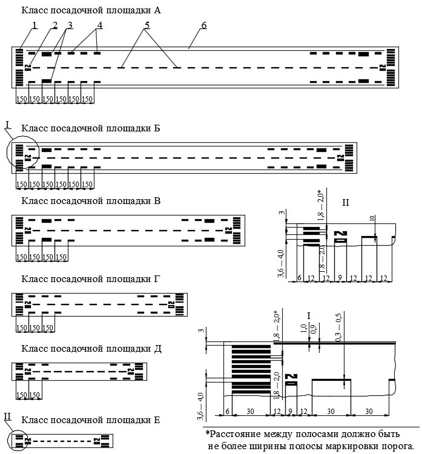
Рисунок А.1 -Маркировочные знаки ВПП посадочных площадок классов А-Е с искусственным покрытием
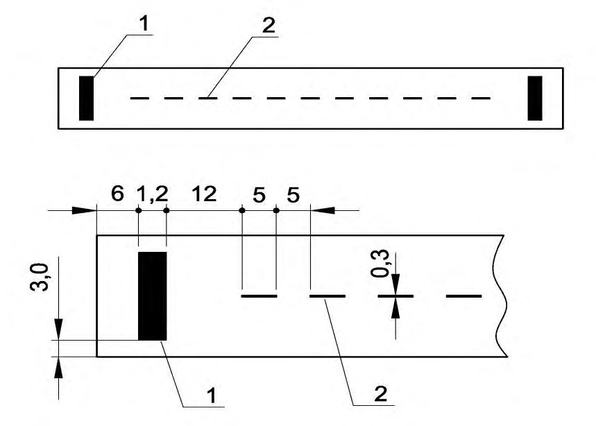
1 - порог ВПП; 2 - осевая линия ВПП
Рисунок А.2 - Маркировочные знаки ВПП неклассифицированных посадочных площадок с искусственным покрытием
А.2 Место расположения, размеры и форма маркеров и маркировочных знаков элементов посадочных площадок с грунтовым покрытием, предназначенных для коммерческих воздушных перевозок и выполнения авиационных работ, представлены на рисунках А.3, А.4.
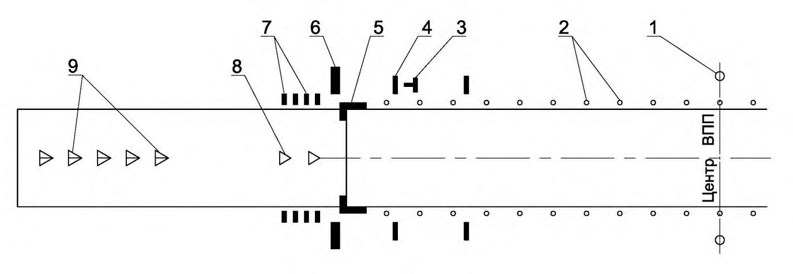
1 - маркер центра ВПП; 2 - пограничный маркер ВПП;
3 - посадочный маркировочный знак «Т»; 4 - маркер зоны приземления;
5 - угловой маркировочный знак ВПП; 6 - входной маркер ВПП;
7 - маркер боковой границы ВПП; 8 - осевой маркировочный знак ВПП;
- маркер подхода
Рисунок А.3 -Маркировочные знаки и маркеры ВПП посадочных площадок классов А - Д с грунтовым покрытием
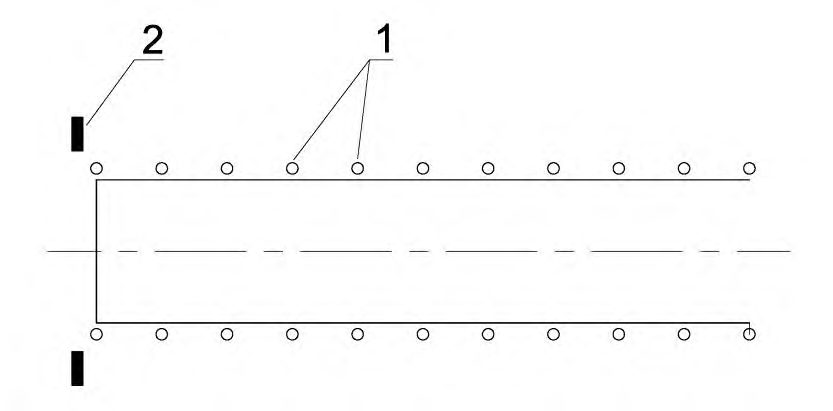
1 - пограничный маркер; 2 - входной маркер
Рисунок А.4 -Маркировочные знаки и маркеры ВПП посадочных площадок классов Е и неклассифицированных с грунтовым покрытием
А.3 Маркировка посадочного «Т» должна располагаться в 3 -15 м от боковой границы ВПП с левой стороны по направлению посадки ВС и на расстоянии от начала ВПП:
200 м -для ВПП классов А, Б и В;
150 м -для ВПП класса Г;
100 м -для ВПП класса Д;
50 м -для ВПП класса Е и неклассифицированных ВПП.
А.4 Угловые маркировочные знаки должны быть расположены по углам ВПП классов А, Б, В, Г, Д.
А.5 Осевой маркировочный знак устанавливается вровень с поверхностью на продолжении осевой линии ВПП классов А -Д на расстоянии 200 и 400 м от ее начала.
А.6 Маркеры подхода для ВПП классов А -Д должны быть расположены на продолжении осевой линии ВПП на расстоянии от ее начала 1200, 1400, 1600, 1800 и 2000 м и на высоте 1 м от поверхности земли с наклоном по направлению посадки 40 .
А.7 Пограничные маркеры устанавливаются вдоль ВПП с интервалом 100 - 200 м и на расстоянии 1 - 5 м от боковых границ ВПП. В центре каждого углового маркировочного знака следует устанавливать пограничный знак.
На ВПП класса Е и неклассифицированных ВПП в качестве пограничных маркеров допускается использовать флажки размерами не менее 0,5х0,4 м, расстояние между которыми должно составлять не более 50 м.
А.8 Входные маркеры должны быть расположены на линии начала ВПП на расстоянии 1 - 5 м от ее боковых границ.
А.9 Маркеры зоны приземления должны быть расположены по обеим сторонам ВПП классов А -Д на расстоянии 1 -5 м от ее боковых границ, в 50 м перед посадочным маркировочным знаком «Т» и в 150 м за ней.
А.10 Маркер центра ВПП устанавливается на расстоянии не менее 10 м от боковой границы ВПП с наклоном 45 к горизонту с левой стороны по направлению посадки.
А.11 Маркеры боковой границы устанавливаются в 1 - 5 м от продолжения боковых границ ВПП на расстоянии 100 м друг от друга и от начала ВПП классов А - Г и 80 м - класса Д.
А.12 На РД, МС, перронах посадочных площадок для самолетов следует устанавливать пограничные маркеры на расстоянии 1 - 5 м от боковых границ элемента посадочной площадки с интервалом 20 м на РД и МС и 100 - 200 м на перронах.
А.13 Посадочный маркировочный знак «Т» устраивается из шести плоских элементов (полотнищ): трех - белого цвета, трех - красного цвета, размерами 5х1 м. Полотнища следует устанавливать на облегченный каркас, высота которого должна быть на 0,1 - 0,2 м больше расчетной толщины снегового покрова. Каркас устанавливается с наклонов 6 - 8 по направлению посадки ВС.
А.14 Угловой маркировочный знак выполняется из тощего бетона, щебня или гравия в соответствии с рисунком А.5.
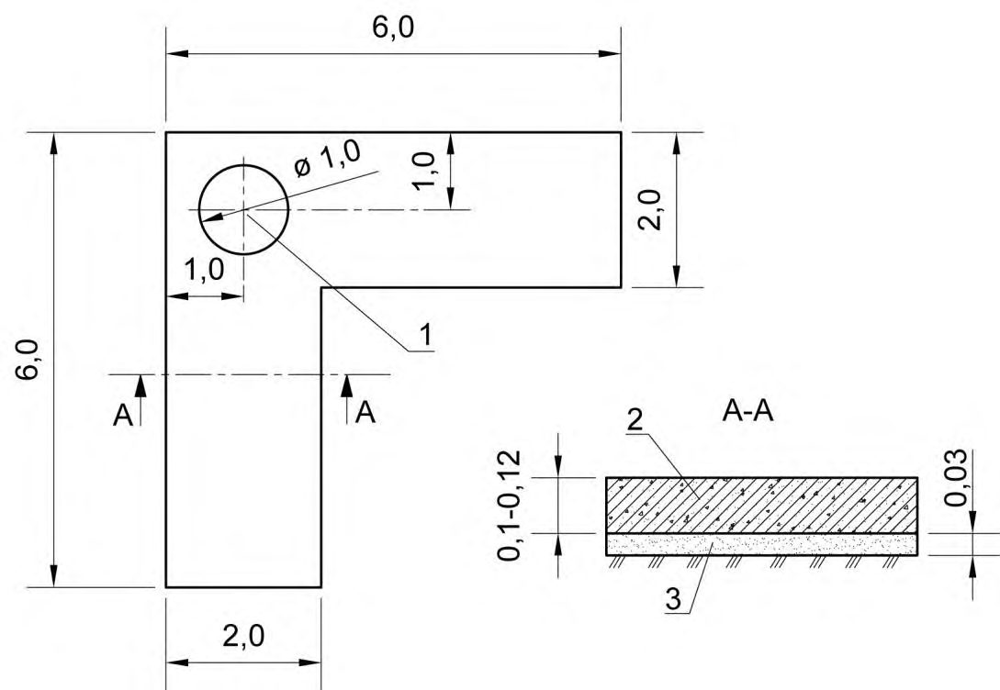
- место установки пограничного знака;
- песчаная подушка
Рисунок А.5 - Угловой маркировочный знак
Верхняя поверхность знака окрашивается в белый цвет. При песчаном и супесчаном грунтовом покрове в месте установки поверхность знака окрашивается в оранжевый цвет.
А.15 Осевой маркировочный знак должен быть в форме равностороннего треугольника со стороной 3 м. Знак устраивается из уплотненного щебня (гравия) толщиной 0,1 -0,12 м, уложенного на песчаное основание, окрашивается в белый цвет.
А.16 Конфигурация маркера подхода представлена на рисунке А.6. Поверхность маркера подхода должна окрашиваться в белый или черный цвет в летний и зимний периоды соответственно. Полоса посередине маркера подхода должна быть шириной 0,6 м и окрашена в оранжевый или красный цвет.
- тощий бетон;
Рисунок А.6 - Маркер подхода
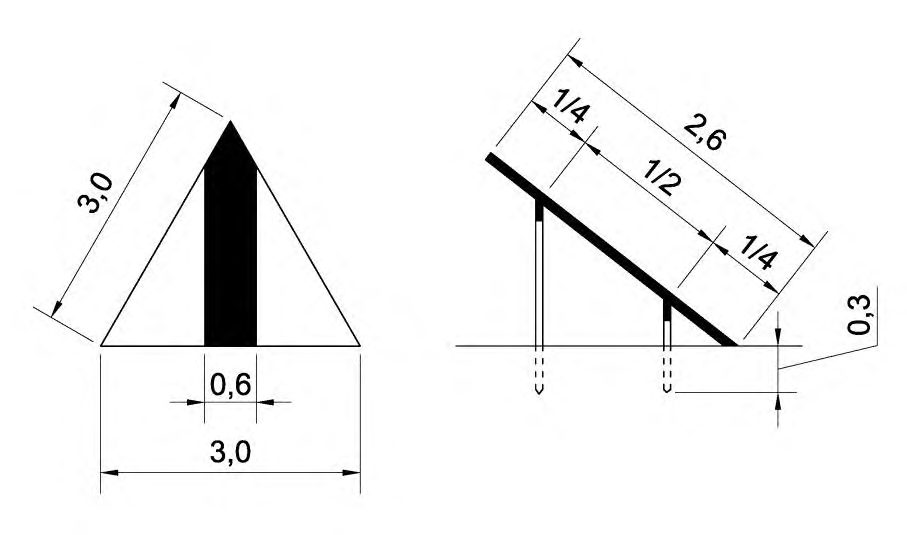
А.17 Конфигурация пограничного маркера представлена на рисунке А.7. Маркер представляет собой конус, поверхность маркера должна быть окрашена поперечными полосами красного и белого или черного и белого цветов, при этом нижняя полоса окрашивается в темный цвет.
Рисунок А.7 - Пограничный маркер
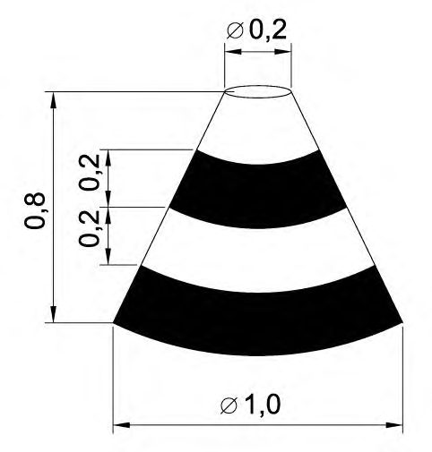
А.18 Конфигурация входного маркера представлена на рисунке А.8. Маркер представляет собой трехгранную призму. Поверхность лицевой стороны (обозначает начало ВПП) маркера должна быть окрашена вертикальными полосами черного и белого цвета. Поверхность тыльной стороны (обозначает конец ВПП) маркера должна быть окрашена вертикальными полосами красного (оранжевого) и белого цвета. Крайние полосы должны быть темного цвета.
Рисунок А.8 - Входной маркер
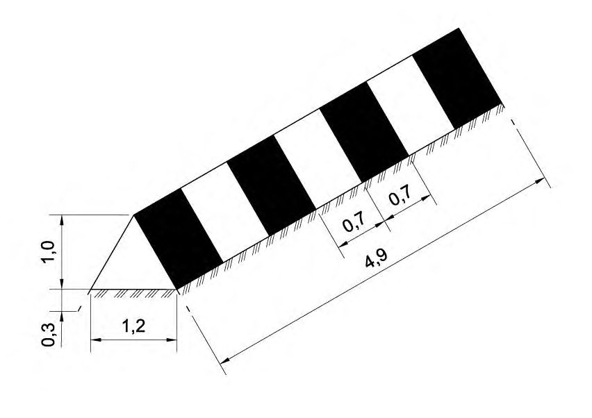
А.19 Конфигурация маркера зоны приземления представлена на рисунке А.9. Маркер представляет собой трехгранную призму. Поверхность маркера зоны приземления видимая со стороны посадки в летний период должна быть окрашена в белый цвет, в зимний период - в черный. Противоположная сторона маркера должна быть окрашена в красный (оранжевый) цвет.
Рисунок А.9 - Маркер зоны приземления
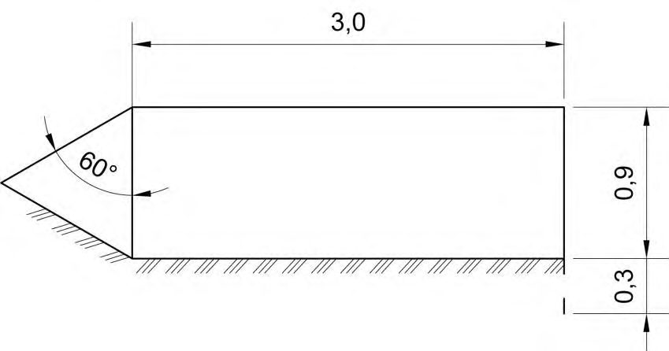
А.20 Конфигурация маркера центра полосы представлена на рисунке А.10. При необходимости обеспечивать лучшую видимость в условиях посадочной площадки знак может быть оборудован желтыми лампами в количестве до 12 шт, расположенными по окружности диаметром 0,9 м на равном расстоянии друг от друга.
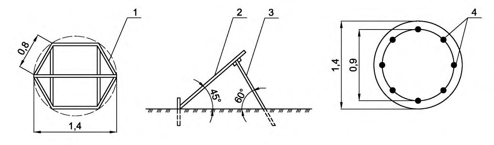
1 - каракас (бруски 0,04×0,08); 2 - лицевая сторона (фанера);
3 - подкос (брус 0,04×0,04); 4 - светосигнальная арматура
Рисунок А.10 - Маркер центра полосы
А.21 Конфигурация маркера боковой границы ВПП представлена на рисунке А.11. Маркер - прямоугольный щит, устанавливаемый на стойке, обеспечивающей возвышение верхней грани щита маркера над расчетной толщиной снегового покрова не менее чем на 1,4 м. Поверхность щита со стороны посадки должна быть окрашена в красный (оранжевый) цвет с полосой белого цвета, нанесенной по диагонали знака. Противоположная сторона знака должна быть окрашена в красный цвет.
Рисунок А.11 -Маркер боковой границы ВПП
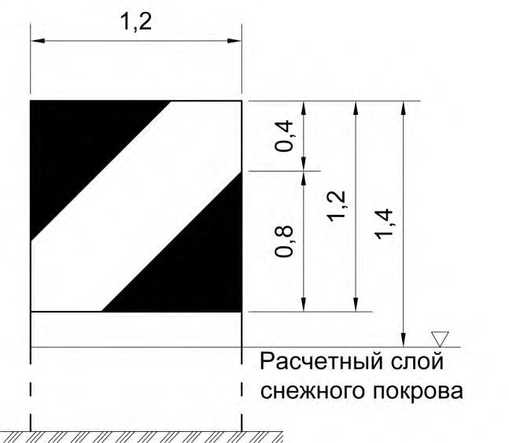
А.22 На поверхности элементов посадочной площадки для вертолетов с искусственным покрытием следует предусматривать маркировочные знаки:
- опознавательная маркировка;
- маркировка зоны FATO.
Дополнительно на поверхности элементов посадочной площадки для вертолетов с искусственным покрытием может быть нанесены маркировочные знаки:
- маркировка зоны TLOF;
- маркировка прицельной точки захода на посадку (прицельная точка приземления).
Опознавательная маркировка вертолетной площадки - буква «Н» белого цвета. На посадочных площадках при учреждениях здравоохранения опознавательная маркировка представляет собой букву «Н» красного цвета на фоне белого креста. Поперечная линия буквы «Н» должна быть расположена перпендикулярно к предпочтительному направлению конечного этапа захода на посадку.
Маркировка зоны TLOF предусматривается в случае, если периметр зоны TLOF выражен не четко.
А.23 Посадочные площадки для вертолетов с грунтовым покрытием следует обозначать маркерами. В качестве маркеров допускается использовать дорожные сигнальные конусы, автопокрышки, окрашенные в контрастный цвет, или флажки.
А.24 На поверхности ВПП посадочных площадок с искусственным покрытием для вертолетов, выполняющих взлет «по-самолетному», должны быть нанесены следующие маркировочные знаки:
- пограничные знаки ВПП;
- цифровой знак ПМПУ;
- буквенный знак «Н»;
- знак ограничения места приземления при посадке.
А.25 На поверхности РД посадочных площадок с искусственным покрытием для вертолетов, выполняющих взлет «по-самолетному», должны быть нанесены следующие маркировочные знаки:
- ось руления ВС;
- край РД.
А.26 На МС, перронах посадочных площадок с искусственным покрытием для вертолетов, выполняющих взлет «по-самолетному», должны быть нанесены следующие маркировочные знаки:
- «Т» образный знак, обозначающий место остановки;
- номера стоянок (МС);
- контуры зон обслуживания.
При необходимости, дополнительно наносятся пути движения и знаки остановки специального автомобильного транспорта.
А.27 На поверхности ВПП посадочных площадок с грунтовым покрытием для вертолетов, выполняющих взлет «по-самолетному», должны быть устроены следующие маркировочные знаки:
- пограничные знаки обозначения границ ВПП;
- угловые знаки ВПП;
- знаки обозначения центра ВПП;
- посадочные знаки «Т».
А.28 На РД, МС и перронах посадочных площадок с грунтовым покрытием для вертолетов, выполняющих взлет «по-самолетному», следует предусматривать устройство пограничных маркеров и знаков номеров (наименования) РД, МС.
А.29 Места расположения, размеры и форма маркеров и маркировочных знаков элементов посадочных площадок для вертолетов приведены на рисунках А.12 - А.19.
Рисунок А.12 - Совместное размещение опознавательной маркировки, маркировки прицельной точки посадки (вариант 1), маркировки зоны FATO посадочной площадки для вертолетов
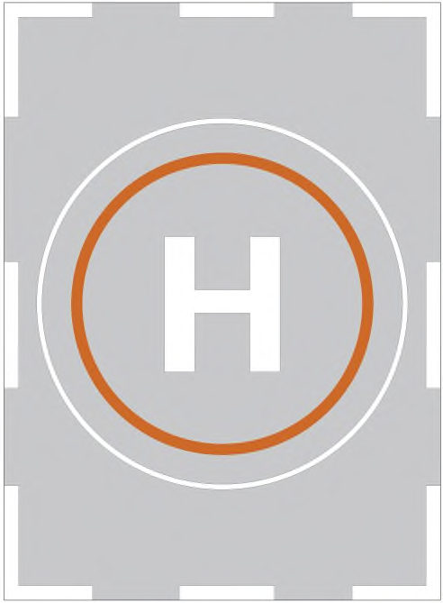
Рисунок А.13 - Совместное размещение опознавательной маркировки, маркировки прицельной точки посадки (вариант 2), маркировки зоны FATO посадочной площадки для вертолетов
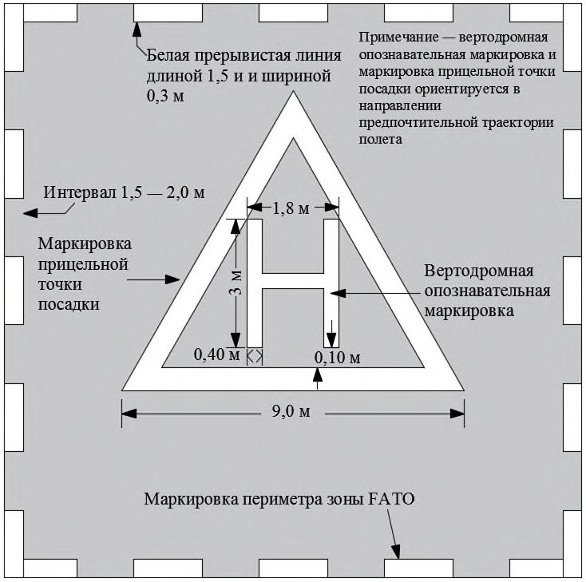
Рисунок А.14 - Опознавательная маркировка посадочной площадки для вертолетов - буква «Н»
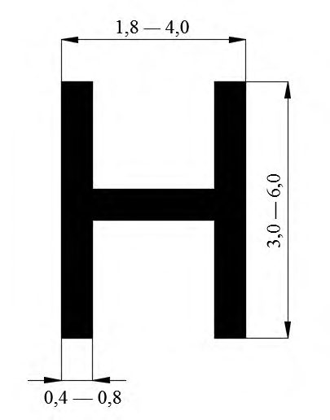
Рисунок А.15 - Опознавательная маркировка посадочной площадки для вертолетов - буква «Н» при учреждениях здравоохранения
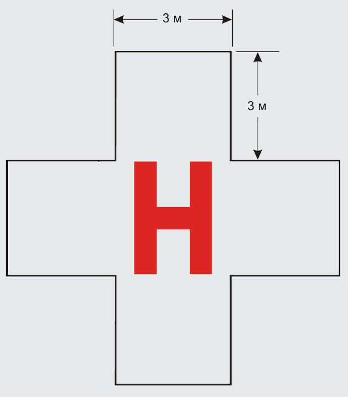
1 - граница ВПП; 2 - пограничный знак ВПП; 3 - цифровой знак ПМПУ; 4 - буквенный знак «Н»; 5 - знак ограничения места приземления при посадке
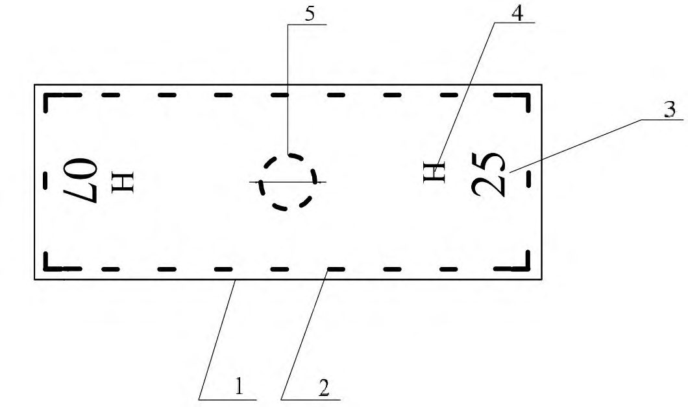
Рисунок А.16 - Маркировочные знаки ВПП посадочных площадок с искусственным покрытием для вертолетов
1 - угловой знак ВПП; 2 - пограничный знак ВПП; 3 - знак обозначения центра ВПП; 4 - посадочный знак «Т»
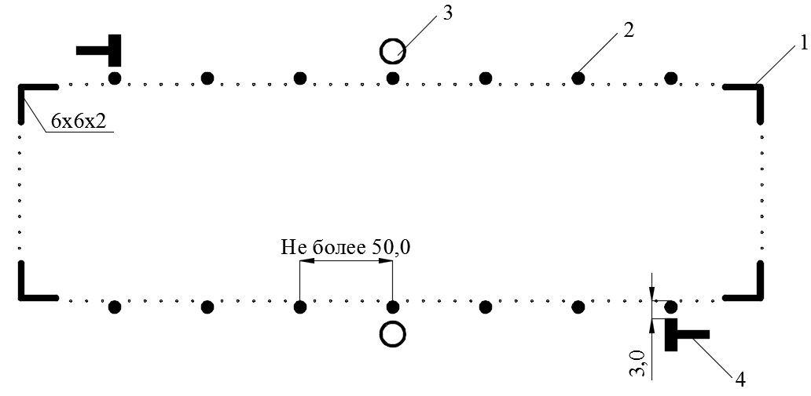
Рисунок А.17 - Маркировочные знаки ВПП посадочных площадок с грунтовым покрытием для вертолетов
Рисунок А.18 -Маркировочные знаки РД посадочных площадок с искусственным покрытием для вертолетов
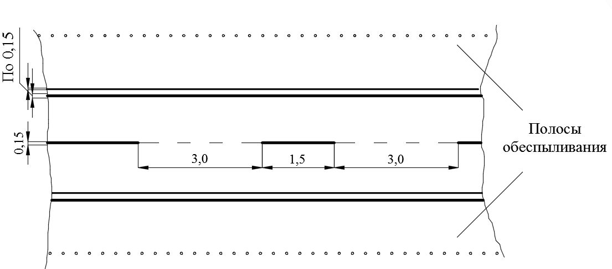
Рисунок А.19 - Маркировочные знаки РД посадочных площадок с грунтовым покрытием для вертолетов
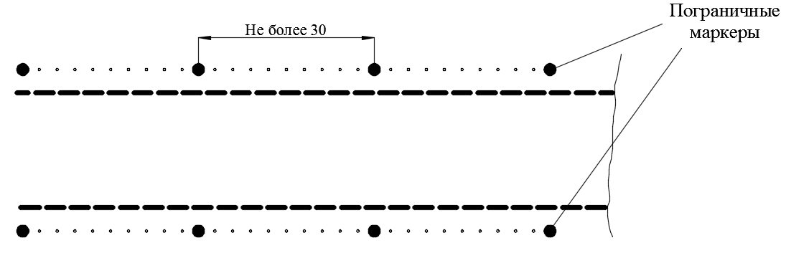
БПриложение Б. Оценка высотных объектов на посадочных площадках
Б.1 Для необорудованной ВПП и ВПП захода на посадку по приборам посадочных площадок для самолетов, предназначенных для коммерческих воздушных перевозок и выполнения авиационных работ, должны устанавливаться следующие поверхности ограничения препятствий:
- коническая;
- внутренняя горизонтальная;
- захода на посадку;
- переходная.
Для ВПП захода на посадку по приборам поверхность захода на посадку расположена горизонтально за точкой, в которой плоскость с наклоном 2,5 % пересекается с горизонтальной плоскостью, расположенной на высоте 150 м над высотой посадочной площадки, или с горизонтальной плоскостью, проходящей через верхнюю точку наивысшего объекта в зоне поверхности захода на посадку, в зависимости от наибольшей высоты.
Для ВПП точного захода на посадку I, II или III категории устанавливаются следующие поверхности ограничения препятствий:
- коническая;
- внутренняя горизонтальная;
- захода на посадку;
- переходные;
- внутренняя поверхность захода на посадку;
- внутренние переходные поверхности;
- поверхность прерванной посадки.
Для направления ВПП, оборудованной для точного захода на посадку поверхность захода на посадку расположена горизонтально за точкой, в которой плоскость с наклоном 2,5 % пересекается с горизонтальной плоскостью, расположенной на высоте 150 м над высотой посадочной площадки, или с горизонтальной плоскостью, проходящей через верхнюю точку наивысшего объекта в зоне поверхности захода на посадку, в зависимости от наибольшей высоты.
Неподвижные объекты не должны находиться в пределах зоны, свободной от препятствий: выступать за внутреннюю поверхность захода на посадку, внутренние переходные поверхности и поверхность прерванной посадки, за исключением ломких объектов, которые по своему функциональному назначению должны располагаться в пределах летной полосы. При использовании ВПП для посадки над этими поверхностями не должно быть подвижных объектов.
Параметры устанавливаемых поверхностей ограничения препятствий для посадочных площадок для самолетов приведены в таблице Б.1.
Таблица Б.1
| Необорудованные ВПП | Необорудованные ВПП | Необорудованные ВПП | ВПП захода на посадку по приборам | ВПП захода на посадку по приборам | ВПП точного захода на посадку I, II, III категории | ВПП точного захода на посадку I, II, III категории | |
|---|---|---|---|---|---|---|---|
| Поверхность и ее параметры | А - Г | Д | Е | А - Г | Д - Е, неклас- сифици- рован- ные | А - Г | Д - Е, неклас- сифи- циро- ванные |
| КОНИЧЕСКАЯ Наклон,% | 5 | 5 | 5 | 5 | 5 | 5 | 5 |
| Высота (относительно внутренней горизонтальной поверхности), м | 100 | 50 | 50 | 100 | 50 | 100 | 50 |
| ВНУТРЕННЯЯ ГОРИЗОНТАЛЬНАЯ | |||||||
| Радиус r , м | 4000 | 2500 | 2500 | 4000 | 3500 | 4000 | 3500 |
| Высота (относительно высоты посадочной площадки), м | 50 | 50 | 50 | 50 | 50 | 50 | 50 |
Продолжение таблицы Б.1
| Необорудованные ВПП | Необорудованные ВПП | Необорудованные ВПП | ВПП захода на посадку по приборам | ВПП захода на посадку по приборам | ВПП точного захода на посадку I, II, III категории | ВПП точного захода на посадку I, II, III категории | |
|---|---|---|---|---|---|---|---|
| Поверхность и ее параметры | А - Г | Д | Е | А - Г | Д - Е, неклас- сифици- рован- ные | А - Г | Д - Е, неклас- сифи- циро- ванные |
| ДЛЯ ЗАХОДА НА ПОСАДКУ | 160 1) | 108 | 80 | 300 | 150 | 300 | 150 |
| Длина нижней границы, м | 60 | 60 | 30 | 60 | 60 | 60 | 60 |
| Расхождение в каждую сторону,% | 10 | 10 | 10 | 15 | 15 | 15 | 15 |
| Первый сектор: | 3000 | 2500 | 1600 | 3000 | 2500 | 3000 | 3000 |
| - длина, м | 2,5 | 3,33 | 3,33 | 2 | 2,5 | 2 | 2,5 |
| - наклон,% Второй сектор: | - | - | - | 3600 2) | - | 3600 2 | 12000 |
| - длина, м | - | - | - | 2,5 | - | 2,5 | 3,0 |
| Горизонтальный сектор: | - | - | - | 8400 2) | - | 8400 2) | - |
| - длина, м | - | - | - | 15000 | - | 15000 | 15000 |
| Общая длина, м | |||||||
| ВНУТРЕННЯЯ ДЛЯ ЗАХОДА НА ПОСАДКУ | - | - | - | - | - | 120 3) | 90 |
| Длина нижней границы, м | - | - | - | - | - | 60 | 60 |
| Расстояние от порога, м | - | - | - | - | - | 0 | 0 |
| Расхождение в каждую сторону,% | - | - | - | - | - | 2 | 2,5 |
| Наклон,% | - | - | - | - | - | 900 | 900 |
| Длина, м |
Продолжение таблицы Б.1
| Необорудованные ВПП | Необорудованные ВПП | Необорудованные ВПП | ВПП захода на посадку по приборам | ВПП захода на посадку по приборам | ВПП точного захода на посадку I, II, III категории | ВПП точного захода на посадку I, II, III категории | |
|---|---|---|---|---|---|---|---|
| Поверхность и ее параметры | А - Г | Д | Е | А - Г | Д - Е, неклас- сифици- рованные | А - Г | Д - Е, неклас- сифи- циро- ванные |
| ПЕРЕХОДНАЯ Наклон,% | 14,3 | 20 | 20 | 14,3 | 20 | 14,3 | 20 |
| ВНУТРЕННЯЯ ПЕРЕХОДНАЯ Наклон,% | - | - | - | - | - | 33,3 | 40 |
| ПРЕРВАННОЙ ПОСАДКИ Длина нижней границы, м | - | - | - | - | - | 120 3) | 90 |
| Расстояние от порога, м | - | - | - | - | - | 1800 4) | 1800 4) |
| Расхождение в каждую сторону,% | - | - | - | - | - | 10 | 10 |
| Наклон,% | - | - | - | - | - | 3,33 | 4 |
1) 140 м - для ВПП класса В и 130 м - класса Г.
2) Длина может изменяться в зависимости от высоты горизонтального сектора.
3) 156 м - для ВПП, предназначенных для приема ВС с размахом крыла 65 м и более, но менее 80 м (140 м - для ВПП класса Б, предназначенных для приема ВС с размахом крыла от 65 м до 75 м и колеей по внешним авиашинам до 10,5 м).
4) Или расстояние от порога ВПП до конца ВПП, в зависимости от того, что меньше.
Б.2 Для необорудованной ВПП и ВПП захода на посадку по приборам, а также для направления ВПП, оборудованной для точного захода на посадку, незатененные объекты, возвышающиеся над поверхностью захода на посадку, переходной, внутренней горизонтальной и конической поверхностями, -препятствия должны быть устранены или уменьшены до размеров, обеспечивающих их затенение, либо маркированы и светоограждены.
Б.3 Для направления, используемого для взлета с ВПП посадочных площадок для самолетов, устанавливается поверхность взлета, параметры которой приведены в таблице Б.2.
Таблица Б.2
| Класс ВПП посадочной площадки для самолетов | Класс ВПП посадочной площадки для самолетов | Класс ВПП посадочной площадки для самолетов | |
|---|---|---|---|
| Параметр поверхности взлета | А, Б, В, Г | Д | Е, неклас- сифициро- ванная |
| Длина нижней границы, м | 180 | 80 | 60 |
| Расхождение в каждую сторону,% | 12,5 | 12,5 | 12,5 |
| Длина, м | 15000 | 7000 | 7000 |
| Длина верхней границы, м | 2000 | 1830 | 1810 |
| Наклон,% | 1,6 | 3,33 | 3,33 |
Б.4 Незатененные существующие объекты, находящиеся над поверхностью взлета, - препятствия должны быть устранены или уменьшены до размеров, обеспечивающих их затенение, либо маркированы и светоограждены.
Б.5Препятствия должны быть учтены при:
- установлении схем захода на посадку и минимальных безопасных высот пролета препятствий;
- установлении схем вылета и района посадочной площадки для самолетов.
Б.6 Воздушное пространство в районе посадочных площадок для вертолетов должно обеспечивать безопасность выполнения взлетно-посадочных операций вертолетов.
Б.7 На посадочных площадках для вертолетов, выполняющих вертикальный взлет/посадку, устанавливаются следующие поверхности ограничения препятствий:
- поверхность захода на посадку и взлета;
- боковые переходные поверхности;
- горизонтальная поверхность.
Относительные высоты, размеры и наклоны этих поверхностей приведены на рисунке Б.1.
Рисунок Б.1 -Схема расположения и наклонов поверхностей ограничения препятствий на посадочных площадках для вертолетов, выполняющих вертикальный взлет/посадку
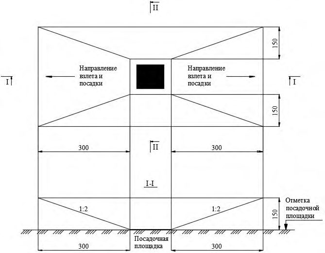
Поверхность захода на посадку и поверхность взлета - наклонная плоскостей, расположенных перед посадочной площадки в направлении захода на посадку и взлета. Поверхности ЗП и ПВ имеют:
- нижнюю границу установленной длины, равную ширине посадочной площадки, расположенную симметрично осевой линии посадочной площадки на ее границе и перпендикулярно к ней;
- две боковые границы от концов нижней границы, равномерно расходящиеся от продолжения оси ВПП;
- верхнюю границу установленной длины, параллельно нижней границе, расположенную в горизонтальной плоскости на высоте 150 м над уровнем посадочной площадки.
Боковая переходная поверхность - наклонная поверхность, расположенная вдоль боковых границ посадочной площадки и простирающаяся вверх и в стороны до горизонтальной поверхности посадочной площадки.
Переходная поверхность имеет:
- нижнюю границу, начинающуюся от боковых границ посадочной площадки;
- верхнюю границу, расположенную в плоскости горизонтальной поверхности ПП;
- боковыми границами поверхности являются боковые границы поверхностей захода на посадку и взлета.
Горизонтальная поверхность -поверхность круглой формы, расположенная в горизонтальной плоскости на высоте 150 м над уровнем посадочной площадки. Радиус ГП равен 3000 м с центром в контрольной точке ПП.
Когда по условиям рельефа местности и расположения препятствий (а также при наличии в непосредственной близости соседних посадочных площадок) не представляется возможным осуществлять взлеты и посадки с двух направлений, допускается устройство посадочной площадки односторонней эксплуатации в соответствии с рисунком Б.2. При этом от конца посадочной площадки до препятствий, преграждающих второе направление взлета/посадки должно быть не менее 50 м.
Рисунок Б.2 -Схема расположения и наклонов поверхностей ограничения препятствий на посадочных площадках для вертолетов, выполняющих вертикальный взлет/посадку, односторонней эксплуатации
Б.8 На посадочных площадках для вертолетов, выполняющих взлет «по-самолетному» (посадочные площадки с ВПП), устанавливаются следующие поверхности ограничения препятствий:
- поверхность захода на посадку и взлета;
- переходные поверхности;
- внутренняя горизонтальная поверхность;
- коническая поверхность.
Относительные высоты, размеры и наклоны этих поверхностей приведены на рисунках Б.3 - Б.5.
Поверхность захода на посадку и поверхность взлета -сочетание наклонных плоскостей, расположенных перед ЛП в направлении захода на посадку и взлета. Поверхности ЗП и ПВ имеют:
- нижнюю границу установленной длины, равную ширине ЛП, расположенную симметрично осевой линии ВПП на границе ЛП и перпендикулярно к ней;
- две боковые границы от концов нижней границы, равномерно расходящиеся под установленными углами к продолжению оси ВПП;
- верхнюю границу установленной длины, параллельно нижней границе, расположенную в горизонтальной плоскости на высоте 150 м над уровнем конца ВПП или проходящей через верхнюю точку определяющего объекта в зависимости от того, что выше.
Переходная поверхность - наклонная поверхность, расположенная вдоль боковых границ ЛП и простирающаяся вверх и в стороны до внутренней горизонтальной поверхности. Переходная поверхность имеет:
- нижнюю границу, начинающуюся от боковых границ ЛП, параллельно оси ВПП на установленном расстоянии от ее продольной оси;
- верхнюю границу, расположенную в плоскости внутренней горизонтальной поверхности;
- боковые границы поверхности - это боковые границы поверхностей захода на посадку и взлета.
Внутренняя горизонтальная поверхность - поверхность круглой формы, расположенная в горизонтальной плоскости на высоте 50 м относительно контрольной точки посадочной площадки. Радиус внешней границы поверхности равен 2000 м с центром в контрольной точке посадочной площадки.
Коническая поверхность - наклонная поверхность, простирающаяся вверх и в стороны от внешней границы внутренней горизонтальной поверхности. Наклон КП измеряется в вертикальной плоскости и составляет 5 % для посадочной площадки с ВПП всех классов. Радиус внешней границы поверхности равен 3000 м с центром в контрольной точке посадочной площадки.
Рисунок Б.3 -Сводный план поверхностей ограничения препятствий на посадочных площадках для вертолетов, выполняющих взлет «по-самолетному»
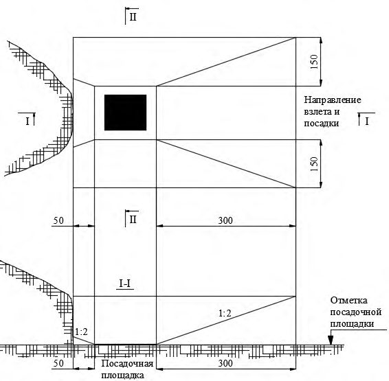
Рисунок Б.4 -Схема расположения и наклонов поверхностей ограничения препятствий на посадочных площадках для вертолетов с ВПП класса I
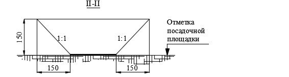
Рисунок Б.5 -Схема расположения и наклонов поверхностей ограничения препятствий на посадочных площадках для вертолетов с ВПП классов II, III
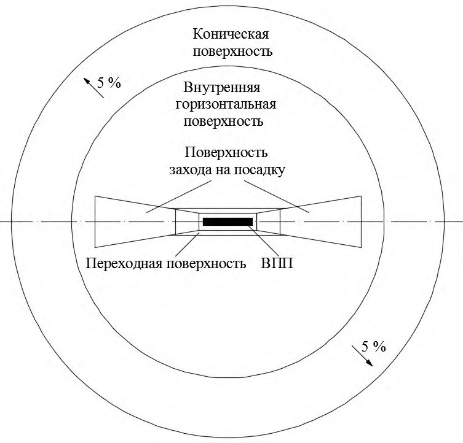
Б.9 Неподвижные (временные и постоянные) и подвижные объекты, выступающие за любую из поверхностей ограничения препятствий, рекомендуется устранять. В случае невозможности их устранения они должны быть внесены в документы аэронавигационной информации посадочной площадки для учета при составлении схем полетов ВС в районе посадочной площадки.
Б.10 Воздушные высоковольтные ЛЭП, расположенные в пределах полос воздушных подходов, кроме ограничения по высоте должны быть удалены от границ ЛП посадочной площадки не менее чем на 1000 м или на 500 м, если ЛЭП со стороны посадочной площадки закрыта складками местности, лесопосадками, зданиями и др. объектами. Расстояние от боковой границы ЛП до линии ЛЭП должно быть не менее 300 м или 150 м, если ЛЭП закрыта на всем протяжении другими объектами.
Б.11 Максимальные значения относительной высоты и наклона поверхностей ограничения препятствий в районе посадочных площадок для самолетов и их минимальные размеры приведены в таблице Б.1.
Б.12 Максимальные значения наклона поверхности взлета и ее минимальные размеры, устанавливаемые для направления взлета с ВПП посадочных площадок для самолетов приведены в таблице Б.2.
Б.13 Схема расположения и наклонов поверхностей ограничения препятствий, устанавливаемых на посадочных площадках для вертолетов, выполняющих вертикальный взлет/посадку, устанавливается согласно рисунку Б.1.
Б.14 Схема расположения и наклонов поверхностей ограничения препятствий, устанавливаемых на посадочных площадках для вертолетов, выполняющих вертикальный взлет/посадку, односторонней эксплуатации приведена на рисунке Б.2.
Б.15 Сводный план поверхностей ограничения препятствий на посадочных площадках для вертолетов, выполняющих взлет «по-самолетному» (посадочные площадки с ВПП), приведен на рисунке Б.3.
Б.16 Схемы расположения и наклонов поверхностей ограничения препятствий, устанавливаемых на посадочных площадках для вертолетов, выполняющих взлет «по-самолетному» (посадочные площадки с ВПП), приведены на рисунках Б.4, Б.5.
ВПриложение В. Индексы воздушных судов
В.1 Индекс ВС типа «самолет» (индекс самолета) устанавливается по размаху крыла и колеи шасси по внешним авиационным шинам (авиашинам) самолета по таблице В.1.
Таблица В.1
| Индекс самолета 1) | Размах крыла, м | Колея шасси по внешним авиашинам 2) , м |
|---|---|---|
| 1 | До 24 | До 4 |
| 2 | От 24 до 32 | От 4 до 6 |
| 3 | От 24 до 32 | От 6 до 9 |
| 4 | От 32 до 42 | От 9 до 10,5 |
| 5 | От 32 до 42 | От 10,5 до 12,5 |
| 6 | От 42 до 65 | От 10,5 до 14 |
| 7 | От 65 до 80 | От 14 до 16 |
В.2 Индекс ВС типа «вертолет» (индекс вертолета) устанавливается по диаметру несущего винта вертолета по таблице В.2.
Таблица В.2
| Индекс вертолета | Диаметр несущего винта, м |
|---|---|
| 1 | До 16 |
| 2 | От 16 до 22 |
| 3 | 22 и более |
ГПриложение Г. Уклоны элементов посадочных площадок
Г.1 Максимально допустимые продольные и поперечные уклоны элементов посадочных площадок для самолетов с искусственным покрытием указаны в таблице Г.1.
Таблица Г.1
| Вид уклона | Максимально допустимый уклон элементов посадочных площадок с искусственным покрытием для самолетов классов | Максимально допустимый уклон элементов посадочных площадок с искусственным покрытием для самолетов классов | Максимально допустимый уклон элементов посадочных площадок с искусственным покрытием для самолетов классов | Максимально допустимый уклон элементов посадочных площадок с искусственным покрытием для самолетов классов |
|---|---|---|---|---|
| А, Б, В | Г | Д | Е, неклас- сифициро- ванные | |
| Продольный уклон участков ВПП: - среднего - концевого | 0,0125 0,008 | 0,015 0,015 | 0,015 0,015 | 0,020 0,015 |
| Поперечный уклон ВПП | 0,015 | 0,015 | 0,020 | 0,020 |
| Продольный уклон РД | 0,020 | 0,030 | 0,030 | 0,030 |
| Поперечный уклон РД | 0,015 | 0,020 | 0,020 | 0,020 |
| Продольный и поперечный уклоны перронов и площадок специального назначения | 0,010 | 0,010 | 0,010 | 0,020 |
| Поперечный уклон обочин ВПП, РД | 0,025 | 0,030 | 0,030 | 0,030 |
| Средний продольный уклон ВПП | 0,010 | 0,010 | 0,010 | 0,017 |
Примечания
- 1 Длина концевых участков ВПП при назначении продольных уклонов принимается равной 1/6 длины ВПП;
- 2 На концевых участках ВПП продольные уклоны должны быть одного направления (только восходящие или только нисходящие);
- 3 Уклоны РД и обочин РД расположенных в пределах ЛП, должны соответствовать уклонам, принятым для ЛП;
- 4 Под средним продольным уклоном ВПП понимается отношение разности отметок начала и конца ВПП к ее длине.
Г.2 Максимально допустимые продольные и поперечные уклоны элементов посадочных площадок для самолетов с грунтовым покрытием указаны в таблице Г.2.
Таблица Г.2
| Вид уклона | Максимально допустимый уклон элементов посадочных площадок с грунтовым покрытием для самолетов классов | Максимально допустимый уклон элементов посадочных площадок с грунтовым покрытием для самолетов классов | Максимально допустимый уклон элементов посадочных площадок с грунтовым покрытием для самолетов классов |
|---|---|---|---|
| А, Б, В | Г, Д | Е, некласифи- цированные | |
| Продольный уклон участков ВПП: - среднего - концевого нисходящего | 0,020 0,020 | 0,025 0,025 0,015 | 0,030 0,025 0,015 |
| Поперечный уклон ВПП | |||
| - концевого восходящего | 0,008 | ||
| 0,020 | 0,025 | 0,025 | |
| Продольный уклон спланированной части ЛП: - среднего - концевого нисходящего - концевого восходящего | 0,020 0,020 | 0,025 0,025 | 0,030 0,025 |
| Продольный уклон ЛП за концом | 0,025 | ||
| части ЛП | |||
| Поперечный уклон спланированной | 0,030 | 0,030 | |
| ВПП: - нисходящий - восходящий | 0,020 0,008 | 0,025 0,015 | 0,030 |
| Поперечный уклон ЛП за концом ВПП при профиле: | 0,020 | ||
| - односкатном - двухскатном Продольный и поперечный уклоны РД | 0,020 0,030 | 0,025 0,030 | 0,025 0,030 |
| 0,020 | 0,025 | 0,030 | |
| Продольный уклон перрона | |||
| 0,020 | 0,020 | 0,025 | |
| Поперечный уклон перрона | 0,015 | 0,015 | 0,020 |
Примечания
1 Длина концевых участков ВПП при назначении продольных уклонов принимается равной 1/6 длины ВПП;
2 На концевых участках ВПП продольные уклоны должны быть одного направления (только восходящие или только нисходящие).
Г.3 Максимально допустимые продольные и поперечные уклоны элементов посадочных площадок для вертолетов указаны в таблице Г.3.
Таблица Г.3
| Вид уклона | Максимально допускаемый уклон элемента посадочной площадки для вертолетов, расположенной на поверхности |
|---|---|
| Продольный уклон: - ВПП с искусственным покрытием - ВПП с грунтовым покрытием | 0,020 0,025 |
| Поперечный уклон: - ВПП с искусственным покрытием - ВПП с грунтовым покрытием | 0,015 0,020 |
| Продольные и поперечные уклоны зоны TLOF | 0,030 |
| Продольный и поперечный уклоны посадочных площадок, располагаемых на крышах зданий и приподнятых платформах | 0,010 |
| Поперечный уклон поверхности территории, непосредственно примыкающей к зоне безопасности | 0,1 |
| Продольный и поперечный уклоны МС, перрона и швартовочной площадки | 0,015 |
| Продольный уклон РД | 0,030 |
| Поперечный уклон РД | 0,020 |
| Поперечный уклон полос обеспыливания | 0,030 |
ДПриложение Д. Радиусы закругления вертикальных кривых посадочных площадок
Д.1 Минимальные радиусы вертикальных кривых, которыми следует сопрягать поверхности элементов посадочных площадок для самолетов в продольном направлении, указаны в таблице Д.1.
Таблица Д.1
| Элемент посадочной площадки | Минимальный радиус, м, вертикальных кривых для сопряжения в продольном направлении элементов посадочных площадок для самолетов классов | Минимальный радиус, м, вертикальных кривых для сопряжения в продольном направлении элементов посадочных площадок для самолетов классов | Минимальный радиус, м, вертикальных кривых для сопряжения в продольном направлении элементов посадочных площадок для самолетов классов | Минимальный радиус, м, вертикальных кривых для сопряжения в продольном направлении элементов посадочных площадок для самолетов классов |
|---|---|---|---|---|
| А | Б, В | Г, Д | Е, неклас- сифициро- ванные | |
| Взлетно-посадочная полоса с искусственным покрытием | 30000 | 20000 | 10000 | 6000 |
| Взлетно-посадочная полоса с грунтовым покрытием | 10000 | 10000 | 6000 | 6000 |
| Рулежная дорожка: | ||||
| - соединительная | 6000 | 6000 | 4000 | 3000 |
| - вспомогательная | 3000 | 3000 | 3000 | 2500 |
Д.2 Радиусы вертикальных кривых для сопряжения поверхности элементов посадочных площадок для вертолетов на поверхности должны быть не менее:
- 6000 м - для ВПП;
- 4000 м - для РД;
- 3000 м - для МС, швартовочных площадок.
ЕПриложение Е. Оборудование посадочных площадок
Светосигнальное оборудование посадочных площадок
Общие требования
Е.1 Взлетно-посадочная полоса и рулежные дорожки посадочных площадок для самолетов, предназначенных для использования в ночное время или в сложных метеоусловиях, должны быть оборудованы системой ССО, сформированной наземными аэронавигационными огнями.
Элементы системы светосигнального оборудования, маркеров со светоотражающим покрытием должны иметь сертификат типа, выданный органом, уполномоченным Правительством Российской Федерации, подтверждающий их соответствие сертификационным требованиям, а также технической документации организации-изготовителя [1, подпункт 3 пункт 2 статья 8].
Вертодромный маяк
Е.2 Вертодромный маяк должен устанавливаться на посадочной площадке или вертопалубе, когда: а) необходимо дальнее визуальное наведение и оно не обеспечивается другими визуальными средствами; б) наличие окружающих огней затрудняет опознавание посадочной площадки или вертопалубы.
Вертодромный маяк должен располагаться на посадочной площадке или вертопалубе, или вблизи их на возвышении, таким образом, чтобы не ослеплять пилота на близком расстоянии.
Примечание - В случае, когда вертодромный маяк может ослеплять пилота на близком расстоянии, допускается его выключение при выполнении пилотом конечных этапов захода на посадку и посадки.
Для предотвращения ослепления пилота на близком расстоянии от маяка должно быть предусмотрено оперативное выключение вертодромного маяка.
Огонь маяка должен быть виден со всех направлений в верхней полусфере.
Вертодромный маяк должен излучать серию коротких вспышек, соответствующих латинской букве «Н» по международной азбуке Морзе.
Яркость вертодромного маяка может регулироваться на уровнях 100 %, 10 % и 3 %.
Система огней приближения
Е.3 Система огней приближения должна устанавливаться на посадочной площадке, где целесообразно и практически возможно указывать пилотам в ночное время предпочтительное направление захода на посадку.
Е.4 Система огней приближения должна располагаться на прямой линии в предпочтительном направлении захода на посадку.
Е.5 Схемы расположения системы огней приближения должны соответствовать рисунку Е.1.
Распределение света огней
Рисунок Е.1 Характеристики вспышек вертодромного маяка
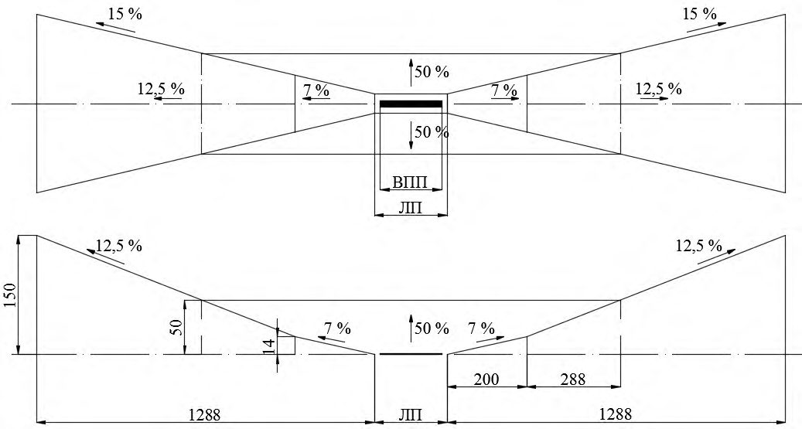
Е.6 Система огней приближения должна состоять не менее, чем из трех огней, расположенных в одном ряду с одинаковыми интервалами (30 3) м, и светового горизонта длиной (18 2) м на расстоянии (90 9) м от периметра зоны FATO.
Е.7 Огни, образующие световой горизонт, должны располагаться по горизонтальной прямой перпендикулярно к линии огней осевой линии и делиться этой линией пополам. Интервалы между огнями светового горизонта должны составлять (4,5 0,5) м.
Е.8 Для обеспечения большей заметности траектории конечного этапа захода на посадку за световым горизонтом могут быть установлены дополнительные огни с одинаковым интервалом (30 3) м. В зависимости от окружающих условий огни, расположенные за световым горизонтом, могут быть огнями постоянного излучения или бегущими проблесковыми огнями.
Примечание - Бегущие проблесковые огни могут быть полезными там, где наличие окружающих огней затрудняет опознавание системы.
Е.9 Если в зоне FATO установлена система огней приближения для осуществления неточных заходов, то такая система должна быть длиной не менее 210 м (рисунок Е.2).
Е.10 Огни постоянного излучения и бегущие проблесковые огни - всенаправленные белые огни.
Е.11 Для корректировки интенсивности огней в зависимости от метеоусловий следует предусматривать соответствующее управление яркостью: для огней постоянного излучения - 100 %, 30 % и 10 %, для проблесковых огней - 100 %, 10 % и 3 %.
Рисунок Е.2 - Системы огней приближения
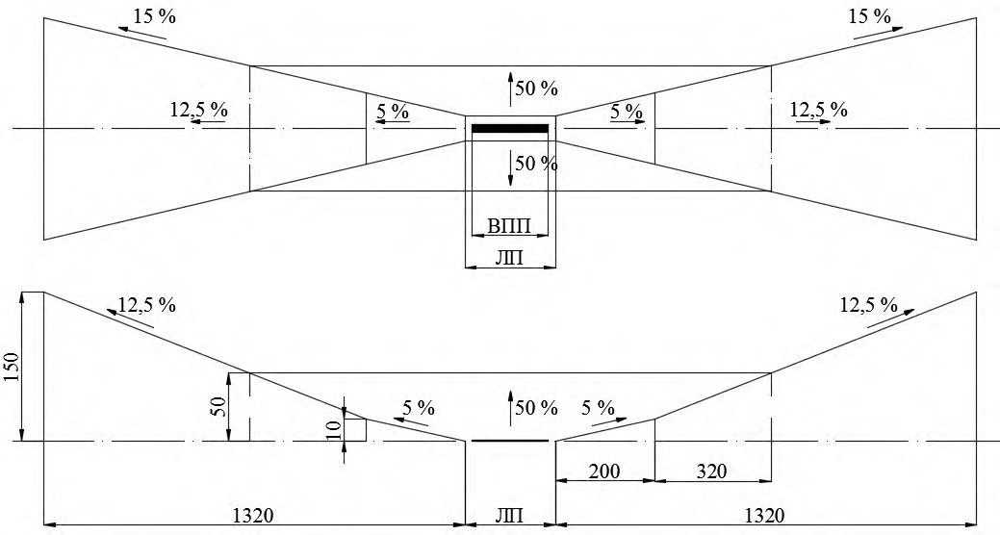
Е.12. Распределение света огней должно соответствовать таблице Е.1.
Таблица Е.1 -Распределение эффективной силы света вертодромного маяка
| Возвышение | Сила света, кд |
|---|---|
| 10° | 250 |
| 7° | 750 |
| 4° | 1700 |
| 2,5° | 2500 |
| 1,5° | 2500 |
| 0° | 1700 |
| Азимут (белый огонь) | Азимут (белый огонь) |
Е.13 Для осуществления неточных заходов на посадку указанная в таблице Е.2 интенсивность увеличивается в 3 раза.
Таблица Е.2 - Распределение света огней приближения (огни белого цвета)
| Возвышение | Сила света, кд |
|---|---|
| 15° | 25 |
| 9° | 250 |
| 6° | 350 |
| 5° | 350 |
| 2° | 250 |
| 0° | 25 |
| Азимут | Азимут |
- Е.14 Распределение света огней зоны FATO должно соответствовать таблице Е.3.
Таблица Е.3 - Распределение света огней зоны FATO (огни белого цвета)
| Возвышение | Сила света, кд |
|---|---|
| 30° | 10 |
| 25° | 50 |
| 20° | 100 |
| 10° | |
| 3° | 100 |
| 0° | 10 |
| Азимут | Азимут |
Е.15 Сила света излучения огней зоны TLOF указана в таблице Е.4. Таблица Е.4 - Распределение света огней периметра зоны TLOF (огни зеленого цвета).
| Возвышение | Сила света, кд |
|---|---|
| 20° < Е 90° | 3 |
| 13° < Е 20° | 8 |
| 10° < Е 13° | 15 |
| 5° < Е 10° | 30 |
| 2° < Е 5° | 15 |
| Азимут | Азимут |
Система визуальной индикации глиссады
Е.16 Для обеспечения захода на посадку на посадочную площадку или вертопалубу должна предусматриваться система визуальной индикации глиссады, независимо от того, оборудованы ли они другими визуальными или невизуальными средствами обеспечения захода на посадку при условиях: а) выполнения полета под конкретным углом наклона его траектории в случае установленных правил пролета препятствий, приемов снижения авиационного шума или соответствующих схем УВД для захода на посадку; б) отсутствия вблизи посадочной площадки или вертопалубы визуальных ориентиров на поверхности.
Е.17 Системы PAPI, APAPI или система HAPI - стандартные системы визуальной индикации глиссады для обеспечения полетов вертолетов.
Системы PAPI и APAPI
Е.18 Системы PAPI и APAPI должны располагаться вблизи номинальной прицельной точки посадки и выставляться по азимуту предпочтительного направления захода на посадку.
Е.19 Огни должны устанавливаться на ломком основании как можно ниже.
Е.20 Система PAPI состоит из флангового горизонта из четырех огней, расположенных с левой стороны от зоны FATO, за исключением случаев, когда это физически невозможно.
Е.21 Система APAPI состоит из флангового горизонта, включающего два огня, расположенных с левой стороны от зоны FATO, за исключением случаев, когда это физически невозможно.
Е.22 Фланговый горизонт PAPI должен устанавливаться таким образом, чтобы во время захода на посадку пилот: а) находясь на глиссаде, видел два огня, расположенных ближе к зоне FATO, красными, а два огня, расположенных дальше от зоны FATO, -белыми;
- б) находясь выше глиссады, видел один огонь, расположенный ближе к FATO, красным, а три огня, расположенных дальше от FATO, -белыми; и находясь еще выше глиссады -видел все огни белыми;
- в) находясь ниже глиссады, видел три огня, расположенных ближе к FATO, красными, а огонь, расположенный дальше от FATO, -белым; и находясь еще ниже глиссады -видел все огни красными.
Е.23 Фланговый горизонт APAPI должен устанавливаться таким образом, чтобы во время захода на посадку пилот:
- а) находясь на глиссаде, видел огонь, расположенный ближе к зоне FATO, красным, а огонь, расположенный дальше от зоны FATO, -белым;
- б) находясь выше глиссады, видел оба огня белыми; и
- в) находясь ниже глиссады, видел оба огня красными.
- Е.24 Огни PAPI и APAPI должны располагаться по основной схеме, показанной на рисунке Е.3, с соблюдением установочных допусков, указанных на этом рисунке.
Рисунок Е.3 -Расположение огней PAPI и APAPI
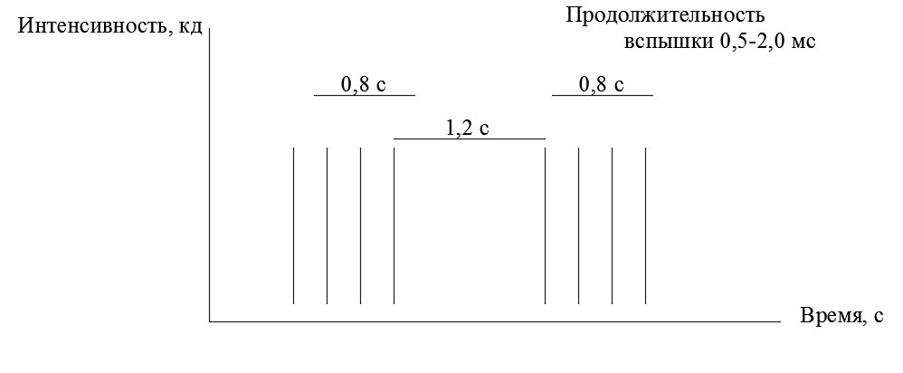
Е.25 В системе APAPI допускаются интервалы между огнями (6 1) м, а расстояние от зоны FATO до внутреннего огня (10 1) м.
- Е.26 В системе PAPI допускается интервал между огнями (9 1) м, а расстояние от зоны FATO до внутреннего огня (15 1) м.
Е.27 Огни PAPI или APAPI должны находиться на одном уровне. Если поперечный уклон поверхности не позволяет выполнить это требование, различие по высоте соседних огней не должен быть более 5 см, а уклон линии огней -не более 1,25 %.
- Е.28 Угловой размер сектора «на глиссаде» PAPI и APAPI должен быть 45 .
- Е.29 Углы возвышения световых пучков огней должны соответствовать рисунку Е.4.
Рисунок Е.4 - Углы возвышения световых пучков огней в системах PAPI и APAPI
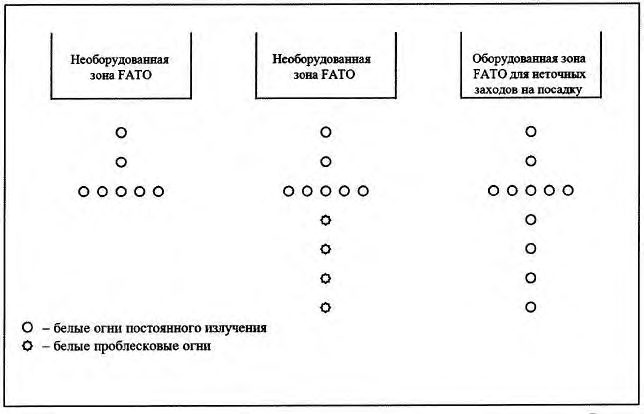
Е.30 Регулирование интенсивности огней должно обеспечиваться тремя ступенями - 100 %, 30 % и 10 %.
Система HAPI
- Е.31 Система HAPI должна устанавливаться таким образом, чтобы препятствовать ослеплению пилотов на конечном этапе захода на посадку и посадки.
- Е.32 Система HAPI должна располагаться вблизи номинальной прицельной точки посадки и выставляться по азимуту предпочтительного направления захода на посадку.
Е.33 На вертопалубе, где отсутствует сектор, свободный от препятствий, и на посадочной площадке, находящейся на уровне поверхности или приподнятой над поверхностью, систему HAPI следует устанавливать или с левой, или с правой стороны зоны FATO.
Е.34 В случае необходимости установки системы HAPI на оси предпочтительного захода на посадку ее необходимо устанавливать в центре внутренней границы зоны FATO.
Примечания
1 В случае, когда система устанавливается выше уровня зоны TLOF, ее возвышение должно определяться соответствующим полномочным органом.
2 В местах, где система HAPI не обеспечивает безопасного расстояния до препятствий по границе зоны FATO, в соответствующих аэронавигационных документах должно содержаться предупреждение .
Е. 35 Примеры использования системы HAPI при различных вариантах ее размещения приведены на рисунке Е.5.
Е.36 Система HAPI должна размещаться на расстоянии (3 0,3) м с внешней стороны зоны безопасности и не выступать за поверхность ограничения препятствий.
Е.37 Огонь должен устанавливаться на ломком основании как можно ниже. а
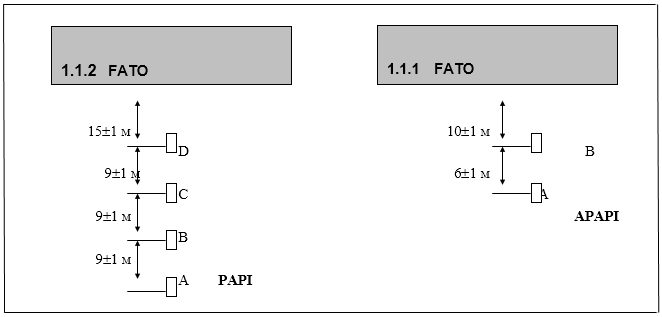
а - слева; б - справа; в - по центру
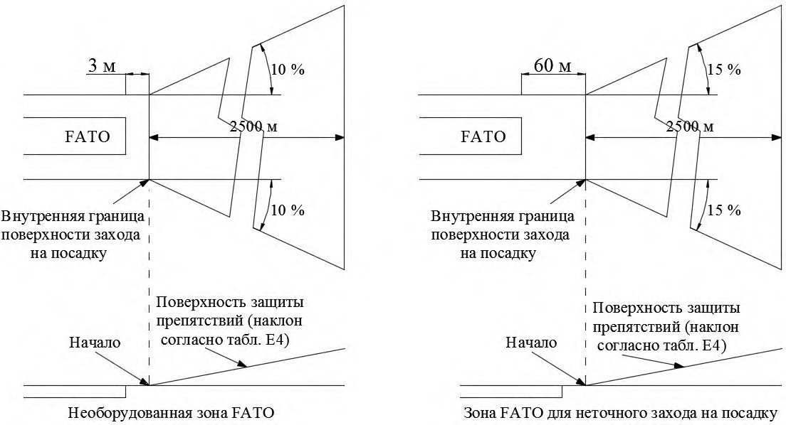
Рисунок Е.5 - Примеры размещения системы HAPI при различных вариантах ее использования
- Е.38 Формат сигнала HAPI должен включать четыре дискретных сигнальных сектора, показанных на рисунке Е.6:
- «выше глиссады» -проблесковый зеленый;
- «на глиссаде» -зеленый;
- «чуть ниже глиссады» -красный;
- «ниже глиссады» -проблесковый красный.
Угловой размер сектора «на глиссаде» HAPI равен 45 .
Угловой размер сектора «чуть ниже глиссады» HAPI равен 15 .
Рисунок Е.6 - Формат сигнала HAPI
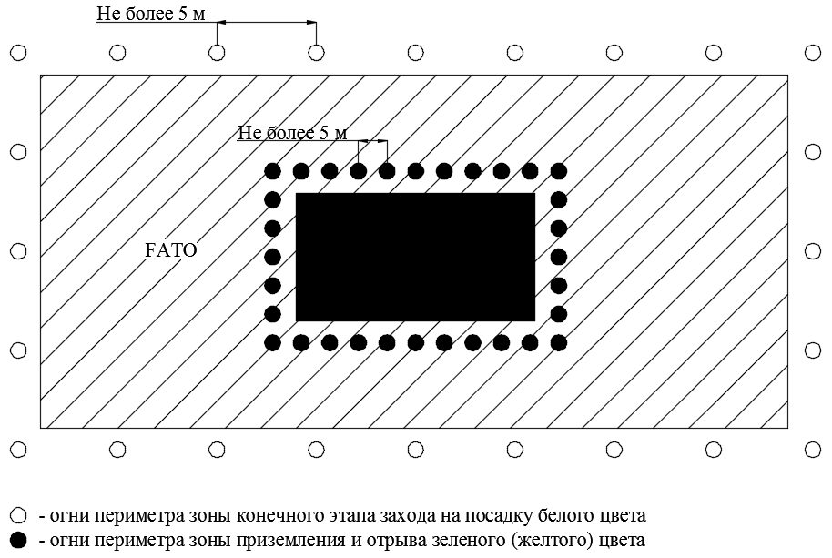
- Е.39 Для обеспечения альтернативных секторов захода на посадку по азимуту система HAPI может устанавливаться на поворотной платформе.
- Е.40 Регулирование интенсивности огней должно обеспечиваться тремя ступенями - 100 %, 30 % и 10 %.
Система HAPI, предназначенная для установки на вертопалубе, должна обеспечивать стабилизацию луча с точностью 15' в пределах угла смещения вертопалубы по поперечной и продольной осям 3 .
Поверхность защиты от препятствий
Примечание - Следующие технические требования применяются к системам PAPI, APAPI и HAPI.
- Е.41 Характеристики поверхности защиты от препятствий соответствуют значениям, указанным на рисунке Е.7 и в таблице Е.5.
Рисунок Е.7 - Поверхность защиты препятствий для систем визуальной индикации глиссады
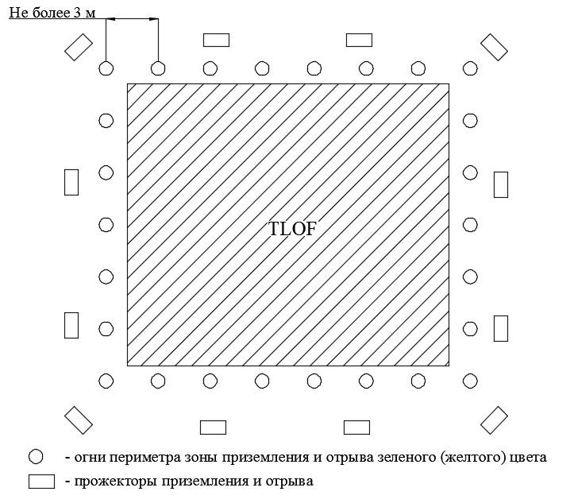
Таблица Е.5
| Наименование параметра | Необорудованная FATO | Необорудованная FATO | Зона FATO для неточного захода на посадку |
|---|---|---|---|
| Длина внутренней границы | Ширина зоны безопасности | Ширина зоны безопасности | Ширина зоны безопасности |
| Расстояние от конца зоны FATO | Минимум 3 м | Минимум 3 м | 60 м |
| Отклонение | 10% | 10% | 15% |
| Общая длина | 2500 м | 2500 м | 2500 м |
| Наклон | PAPI | А 1) - 0,57 | А 1) - 0,57 |
| Наклон | APAPI | А 1) - 0,9 | А 1) - 0,9 |
| Наклон | HAPI | А 2) - 0,65 | А 2) - 0,65 |
Огни зоны конечного этапа захода на посадку и взлета
Е.42 Огни зоны FATO должны устанавливаться на посадочной площадке, расположенной на уровне поверхности земли, предназначенной для использования ночью, за исключением случаев, когда зоны FATO и TLOF совпадают.
Е.43 Огни зоны FATO должны располагаться равномерно вдоль границ зоны с интервалами: а) не более 50 м при расположении минимум четырех огней на каждой стороне, включая один огонь в пределах каждого угла в случае, когда зона имеет форму квадрата или прямоугольника; и б) не более 5 м при наличии не менее десяти огней в случае, когда зона имеет любую другую форму (в том числе форму круга).
Е.44 Огни зоны FATO - всенаправленные огни постоянного излучения белого цвета. Высота огней не должна превышать 45 см над уровнем земли или снега.
Система огней зоны приземления и отрыва
Е.45 Система огней зоны TLOF должна устанавливаться на посадочной площадке или вертопалубе, предназначенной для использования ночью.
Е.46 Система огней зоны TLOF на посадочной площадке, расположенной на уровне поверхности, должна состоять из одного или нескольких следующих средств: а) огней периметра или
- б) прожекторов, или в) наборов сегментированных точечных источников света или люминесцентных блоков, когда применение огней периметра и прожекторов непрактично при наличии огней в зоне FATO.
Е.47 Система огней зоны TLOF посадочной площадки, приподнятой над поверхностью, или вертопалубы должна состоять из: а) огней периметра;
б) ASPSL и (или) LP, и (или) прожекторов.
Примечание - На посадочной площадке, приподнятой над поверхностью, и вертопалубе для обеспечения наземных структурных ориентиров в дополнение к огням периметра лучше всего следует устанавливать ASPSL в виде герметизированных полос светодиодов (LED).
Е.48 Огни периметра зоны TLOF должны располагаться по краю зоны, объявленной для использования ночью в качестве зоны приземления и отрыва, или в пределах расстояния, равного 1,5 м от края зоны.
Е.49 Огни периметра зоны TLOF должны размещаться равномерно с интервалами не более 3 м для посадочных площадок, приподнятых над поверхностью, и вертопалуб и не более 5 м для посадочных площадок, расположенных на поверхности.
Примеры схем расположения огней периметра зоны TLOF показаны на рисунках Е.8 и Е.9.
Примечание - Интервал между огнями периметра зоны TLOF в месте примыкания РД может быть более 5 м и составлять величину, определяемую шириной РД.
Рисунок Е.8 Пример схемы расположения огней периметра зоны TLOF
Рисунок Е.9 Пример схемы расположения огней периметра зоны TLOF
Е.50 Там, где зона приземления и отрыва представляет собой круг, огни:
- а) должны располагаться на прямых линиях по схеме, которая обеспечивает пилотов информацией о величине сноса. Минимальное количество огней равно четырем огням на каждой стороне, включая огонь в каждом углу; б) если перечисление а) не применимо, то огни должны равномерно устанавливаться по периметру зоны приземления и отрыва. Минимальное количество огней должно быть не менее 14.
Е.51 Огни периметра зоны TLOF должны устанавливаться на посадочной площадке, приподнятой над поверхностью, или вертопалубах на неподвижных конструкциях таким образом, чтобы исключить схему их расположения из поля зрения пилота, находящегося ниже уровня зоны приземления и отрыва.
Е.52 Огни периметра зоны TLOF на вертопалубах, размещенных на плавающих конструкциях, должны устанавливаться таким образом, чтобы исключить схему их расположения из поля зрения пилота, находящегося ниже уровня зоны приземления и отрыва, при горизонтальном расположении вертопалубы.
Е.53 Огни периметра зоны TLOF должны быть всенаправленными огнями зеленого цвета постоянного излучения.
Е.54 На посадочной площадке, где отсутствуют посторонние источники света, допускается использование всенаправленных огней желтого цвета постоянного излучения.
Е.55 ASPSL или LP должны быть зеленого цвета.
Е.56 Высота огней периметра зоны TLOF посадочной площадке, приподнятой над поверхностью, или вертопалуб должна быть не более 25 см.
Е.57 Высота огней периметра зоны TLOF посадочной площадке, расположенной на поверхности, должна быть не более 45 см.
Е.58 Прожекторы зоны TLOF располагаются таким образом, чтобы не создавать блескости пилотам, находящимся в полете. Схема установки и направление прожекторов выбираются таким образом, чтобы создавался минимум теней.
Е.59 Высота прожекторов зоны TLOF посадочной площадке, приподнятой над поверхностью, или вертопалуб должна быть не более 25 см.
Е.60 Высота прожекторов зоны TLOF посадочных площадок, расположенных на поверхности, должна быть не более 45 см.
Е.61 Средний уровень горизонтальной освещенности прожекторами, измеренный на поверхности зоны приземления и отрыва, должен составлять по крайней мере 10 люкс при коэффициенте равномерности освещения (среднее к минимуму) не более 8:1.
Е.62 На посадочных площадках, расположенных на уровне поверхности, LP располагаются вдоль маркировки, обозначающей границу зоны приземления и отрыва. Если зона приземления и отрыва имеет форму круга, LP располагаются по прямым линиям, обозначающим пределы указанной зоны.
Е.63 На посадочной площадке, расположенной на уровне поверхности, минимальное количество LP в зоне приземления и отрыва равно девяти. Общая длина LP в схеме должна быть не более 50 % длины указанной схемы. Следует предусматривать не менее трех блоков на каждой стороне зоны приземления и отрыва, включая блок в каждом углу. Люминесцентные блоки располагаются равномерно с расстоянием между концами смежных блоков не более 5 м на каждой стороне зоны приземления и отрыва.
Е.64 На посадочных площадках, приподнятых над поверхностью, или на вертопалубах люминесцентные блоки не должны устанавливаться рядом с огнями периметра. Их следует располагать вдоль маркировки зоны приземления, которая наносится или совпадает с маркировкой обозначения посадочной площадки.
Е.65 Минимальная ширина люминесцентного блока равна 6 см. Арматура блока имеет цвет маркировки, которую он обозначает.
Е.66 Люминесцентные блоки должны выступать над поверхностью не более чем на 2,5 см.
Огни прицельной точки посадки
Е.67 Огни прицельной точки посадки должны устанавливаться в тех случаях, когда на посадочной площадке, предназначенной для использования ночью, предусматривается маркировка прицельной точки посадки.
Е.68 Огни прицельной точки посадки совмещаются с маркировкой прицельной точки посадки.
Е.69 Система огней прицельной точки посадки должна состоять, по крайней мере, из шести всенаправленных огней белого цвета, как показано на рисунке Е.10. Огни углубленного типа используются в тех случаях, когда возвышающийся над поверхностью огонь может создать угрозу безопасности полетов вертолетов.
Рисунок Е.10 - Огни прицельной точки посадки
Боковые огни рулежной дорожки 9 м
Е.70 Боковые огни РД должны устанавливаться на РД, предназначенных для использования в ночное время, за исключением того, что они могут не устанавливаться там, где, учитывая характер операций, ориентирование может обеспечиваться освещением поверхности или иным способом. -огонь прицельной точки посадки белого цвета
- Е.71 Боковые огни РД на прямолинейных участках должны устанавливаться с одинаковым продольным интервалом не более 60 м. Огни на повороте устанавливаются с меньшими интервалами.
- Е.72 Огни должны располагаться как можно ближе к краям РД или за краями на расстоянии не более 3 м.
- Е.73 Боковые огни РД должны быть огнями синего цвета постоянного излучения.
- Е.74 Высота огней должна быть не более 45 см.
Светоограждение препятствий
Е.75 Неподвижные объекты, выступающие над поверхностью ограничения препятствий, должны быть оснащены заградительными огнями, если посадочная площадка или вертопалуба используются в ночное время, за исключением случаев, если подобное препятствие затенено другим неподвижным препятствием.
Е.76 Заградительными огнями следует оснащать не являющиеся препятствиями неподвижные объекты, примыкающие к поверхностям захода на посадку и взлета, в тех случаях, когда считается, что светоограждение в ночное время необходимо для того, чтобы избежать столкновения с указанными объектами.
Е.77 Один или несколько заградительных огней устанавливаются как можно ближе к самой высокой точке объекта. Верхние огни располагаются таким образом, чтобы, по крайней мере, обозначать точки или края объекта с самым большим превышением по отношению к поверхности ограничения препятствий.
Е.78 При светоограждении объекта большой протяженности или группы близко расположенных объектов верхние огни, по крайней мере на точках или краях объектов с самым большим превышением по отношению к поверхности ограничения препятствий, располагаются так, чтобы можно было определять общие очертания и протяженность объекта. Если два или более краев препятствия находятся на одной и той же высоте, то маркируется край, ближайший к летному полю. Продольное расстояние между заградительными огнями не превышает 45 м.
Е.79 При высоте объекта более 45 м над уровнем окружающей местности или над наивысшими точками близко расположенных зданий (когда маркируемый объект окружен зданиями), предусматриваются дополнительные огни на промежуточных уровнях. Эти дополнительные огни по возможности располагаются на равном расстоянии друг от друга между верхними огнями и уровнем земли или уровнем высших точек близко расположенных зданий с интервалом не более 45 м.
Е.80 При светоограждении трубы или другого сооружения аналогичного назначения верхние огни должны устанавливаться ниже верхней точки препятствия на 1,5 - 3 м для уменьшения загрязнения дымом и т. п.
Е.81 Количество и расположение заградительных огней на каждом уровне, подлежащем маркировке, должно быть таким, чтобы объект обозначался со всех направлений в горизонтальной плоскости.
Е.82 Заградительные огни на неподвижных объектах - красные огни постоянного излучения.
Прожекторное освещение препятствий
Е.83 На посадочной площадке или вертопалубе, предназначенной для использования ночью, препятствия освещаются прожекторами, если нет возможности выставить на них заградительные огни.
Е.84 Прожекторы для освещения препятствий должны располагаться таким образом, чтобы полностью освещать препятствие и, насколько это практически возможно, не ослеплять пилотов ВС.
Е.85 Прожекторное освещение препятствий должно быть таким, чтобы создавать яркость по крайней мере 10 кд/м² .
Ветроуказатель
Е.86 Посадочная площадка или вертопалуба должна оборудоваться по крайней мере одним ветроуказателем.
Е.87 Ветроуказатель должен размещаться таким образом, чтобы указывать ветровые условия в зоне конечного этапа захода на посадку и взлета и чтобы он не подвергался воздействию возмущений воздушного потока, вызываемых расположенными поблизости объектами или струями несущих винтов. Он должен быть виден пилоту ВС в полете, в режиме висения или на рабочей площади.
Е.88 Там, где зона приземления и отрыва может подвергаться воздействию возмущенного потока воздуха, для указания приземного ветра, вблизи этой зоны, должны быть установлены дополнительные ветроуказатели.
Е.89 Указатель должен представлять собой усеченный конус, изготовленный из легкой ткани, размерами, указанными в таблице Е.6.
Таблица Е.6
| Наименование параметра | Посадочные площадки, расположенные на поверхности, м | Посадочные площадки, приподнятые над поверхностью, и вертопалубы, м |
|---|---|---|
| Длина | 2,4 | 1,2 |
| Диаметр большего конца | 0,6 | 0,3 |
| Диаметр меньшего конца | 0,3 | 0,15 |
Е.90 Цвет ветроуказателя должен выбираться с учетом фона таким образом, чтобы он был хорошо различим и его показания были понятны с высоты, по крайней мере, 200 м над посадочной площадкой или вертопалубой. Там, где это возможно, должен использоваться один цвет, желательно белый или оранжевый. Там, где для обеспечения хорошей видимости на изменяющемся фоне необходимо использовать сочетание двух цветов, предпочтение следует отдавать сочетанию оранжевого с белым, красного с белым или черного с белым, причем цвета следует располагать в виде пяти чередующихся полос так, чтобы первая и последняя имели более темный цвет.
Е.91 Ветроуказатель на посадочной площадке или вертопалубе, предназначенной для использования ночью, должен быть обеспечен подсветкой.
Электропитание огней
Е.92 Электропитание огней системы светосигнального оборудования посадочных площадок и вертопалуб должно осуществляться по одной или более кабельным линиям для каждой из следующих подсистем огней: а) вертодромный маяк;
- б) огни приближения и светового горизонта постоянного излучения;
- в) бегущие проблесковые огни приближения;
- г) система визуальной индикации глиссады;
- д) огни зоны конечного этапа захода на посадку и взлета;
- е) огни периметра зоны приземления и отрыва;
- ж) прожекторы зоны приземления и отрыва;
- з) люминесцентные блоки зоны приземления и отрыва;
- и) огни прицельной точки посадки;
- к) огни рулежных дорожек;
- л) заградительные огни;
- м) прожекторы освещения препятствий;
- н) огни подсвета ветроуказателя.
Примечание - Огни РД допускается включать в линии электропитания FATO или огней периметра TLOF.
Е.93 Сопротивление изоляции кабельных линий напряжением до 1000 В должно быть не менее 0,5 МОм, а для линий напряжением выше 1000 В не менее 1 МОм.
Дистанционное управление светосигнальными средствами
Е.94 Аппаратура дистанционного управления для системы ССО должна обеспечивать управление светосигнальными средствами, задействованными на посадочной площадке или вертопалубе, и контроль за их состоянием.
Примечание - Под управлением светосигнальными средствами понимается их включение, выключение, а также управление силой света огней.
Е.95 Пульт оперативного управления ССО и сигнализация его состояния должны размещаться на рабочем месте диспетчера-информатора, обеспечивающего заход на посадку, посадку, взлет и руление ВС.
Е.96 Пульт оперативного управления должен обеспечивать раздельное включение и выключение всех подсистем огней, задействованных на посадочной площадке или вертопалубе.
Е.97 При переключении ступеней яркости огней с пульта оперативного управления ССО не должно быть темнового промежутка.
Светотехническое оборудование пассивного типа
Примечание - Приведенные ниже требования распространяются на маркеры со светоотражающим покрытием (далее - маркеры), предназначенным для использования в ночное время на посадочных площадках, расположенных на уровне поверхности.
Маркеры приближения
Е.98 Маркеры приближения должны устанавливаться на посадочных площадках, расположенных на уровне поверхности, где целесообразно и практически возможно указывать пилотам в ночное время предпочтительное направление захода на посадку.
Е.99 Маркеры приближения должны устанавливаться в соответствии с требованиями к огням приближения.
Е.100 Для ориентирования по высоте и курсу при взлете, а также для взлета в условиях снежного экрана, следует устанавливать маркеры приближения и светового горизонта (со светоотражающим покрытием с двух сторон) с противоположного курса.
Е.101 Цвет светоотражающего покрытия маркеров приближения должен быть белым.
Е.102 Маркеры приближения должны быть прямоугольной формы.
Маркеры зоны конечного этапа захода на посадку и взлета
Е.103 Маркеры зоны FATO должны устанавливаться на посадочной площадке, расположенной на уровне поверхности, предназначенной для использования ночью, за исключением тех случаев, когда зоны FATO и TLOF совпадают.
Е.104 Цвет светоотражающего покрытия маркеров зоны FATO должен быть белым.
Е.105 Маркеры зоны FATO должны быть пирамидальной формы.
Е.106 Высота маркеров должна быть не более 45 см над уровнем земли или снега.
Маркеры периметра зоны приземления и отрыва
Е.107 Маркеры периметра зоны TLOF должны устанавливаться на посадочной площадке, расположенной на уровне поверхности, предназначенной для использования ночью.
Е.108 Маркеры периметра зоны TLOF должны устанавливаться в соответствии с требованиями к огням периметра зоны TLOF.
Е.109 Цвет светоотражающего покрытия маркеров периметра зоны TLOF должен быть зеленым.
Е.110 На посадочных площадках, где отсутствуют посторонние источники света, допускается использование маркеров желтого цвета.
Е.111 Маркеры периметра зоны TLOF должны быть пирамидальной формы.
Е.112 Высота маркеров должна быть не более 45 см.
Боковые маркеры РД
Е.113 Боковые маркеры РД должны устанавливаться на РД, предназначенных для использования в ночное время, и на которых не предусмотрены боковые огни РД.
Е.114 Боковые маркеры РД на прямолинейном участке РД должны быть установлены с одинаковым продольным интервалом не более 30 м. Маркеры на повороте устанавливаются с меньшими интервалами.
Е.115 Маркеры должны быть расположены как можно ближе к краям РД или за краями на расстоянии не более 3 м.
Е.116 Цвет светоотражающего покрытия боковых маркеров РД должен быть синим.
Е.117 Боковые маркеры РД должны быть цилиндрической (или близкой к цилиндрической) формы.
Е.118 Высота маркеров должна быть не более 45 см.
Электроснабжение посадочных площадок
Е.119 Электроснабжение посадочных площадок должно осуществляться, как правило, от сетей ЦЭС или от местной малой электростанции.
Е.120 В качестве внешних централизованных независимых источников электроснабжения посадочных площадок могут быть использованы ТП: районные, близлежащих предприятий и другие подобные источники, которые могут обеспечивать посадочную площадку электроэнергией достаточной мощности, необходимым уровнем надежности и бесперебойной ее подачей.
Е.121 Электроснабжение посадочных площадок, обеспечивающих полеты по ППП, должно осуществляться от двух независимых источников, которыми могут быть: два внешних источника ЦЭС; один внешний источник, используемый в качестве основного, и автономный источник; два взаимнорезервирующих автономных источника, установленных на местной малой электростанции или на объектах.
Е.122 Электроснабжение посадочных площадок, обеспечивающих полеты по ПВП, как правило, осуществляется от одного источника. При наличии на посадочной площадке ССО и АРП их электроснабжение рекомендуется осуществлять от двух источников.
Е.123 Подача электроэнергии от внешних источников к посадочным площадкам, как правило, должна осуществляться низковольтными линиями электропередачи напряжением 380/220 В.
Е.124 Пропускная способность ЛЭП должна обеспечивать полную потребность в электроэнергии всех потребителей посадочной площадки.
Е.125 При ограниченной пропускной способности ЛЭП передаваемая через нее мощность должна быть не менее мощности потребления всеми техническими средствами, обеспечивающими безопасность полетов ВС, а также оборудованием, обеспечивающим условия их нормальной работы и обслуживания. В этих случаях на распределительных устройствах должна быть предусмотрена возможность предварительного оперативного отключения
СП 1325800.2022 служебным персоналом всех вспомогательных потребителей, если при их работе может произойти перегрузка ЛЭП.
Е.126 Электрические сети на территориях посадочных площадок могут быть кабельными и воздушными. В полосе воздушных подходов электрические сети, должны быть кабельными.
Е.127 Высота опор воздушных электрических линий должна быть не более установленных поверхностей ограничения высот препятствий.
Е.128 Объекты и технические средства радиотехнического обеспечения полетов, УВД, светосигнальное и метеорологическое оборудование как потребителей электроэнергии (электроприемники) по степени надежности электроснабжения относятся к первой и второй категориям. Категории надежности электроснабжения указанных потребителей должны соответствовать данным, приведенным в таблице Е.7.
Е.129 Максимально допустимое время перерыва в электропитании этих потребителей не должно превышать значений, приведенных в таблице Е.7.
Таблица Е.7
| Посадочные площадки для обеспечения полетов | Посадочные площадки для обеспечения полетов | Посадочные площадки для обеспечения полетов | Посадочные площадки для обеспечения полетов | |
|---|---|---|---|---|
| по ППП | по ППП | по ПВП | по ПВП | |
| Наименование объекта (электроприемника) | Категория электро- приемника | Максимально допустимое время перерыва в электро- питании, с | Катего- рия электро- прием- ника | Максимально допустимое время перерыва в электро- питании, с |
| ОПРС | 1 | 120 | II | 120 |
| ССО | 1 | 120 | II | 120 |
| АРП | 1 | 120 | - | - |
| Средства воздушной электросвязи ОВЧ диапазона | 1 | 15 1) | 1 | 15 1) |
Продолжение таблицы Е.7
| Посадочные площадки для обеспечения полетов | Посадочные площадки для обеспечения полетов | Посадочные площадки для обеспечения полетов | Посадочные площадки для обеспечения полетов | |
|---|---|---|---|---|
| по ППП | по ППП | по ПВП | по ПВП | |
| Наименование объекта (электроприемника) | Категория электро- приемника | Максимально допустимое время перерыва в электро- питании, с | Катего- рия электро- прием- ника | Максимально допустимое время перерыва в электро- питании, с |
| Средства электросвязи ВЧ диапазона | 1 | 120 | 1 | 120 |
| Панели управления и контроля радиосвето- технических средств | 1 | 120 | II | 120 |
| Метеорологическое оборудование | 1 | 120 | 1 | 120 |
| Заградительные огни | 1 | 120 | 1 | 120 |
Е.130 При определении категории надежности электроснабжения потребителей электроэнергии первой категории, содержащих в составе технологического оборудования химические источники электроэнергии (аккумуляторные батареи), работающие в буферном режиме с основным источником электроэнергии, эти химические источники используются в качестве резервных источников.
Е.131 Электроснабжение радиотехнического оборудования, средств УВД, светосигнального и метеорологического оборудования на посадочных площадках, оборудованных для обеспечения полетов по ППП, рекомендуется осуществлять от щитов гарантированного питания с автоматическим включением резерва.
Е.132 Технические средства связи пожарного депо, средства охранной и пожарной сигнализации на посадочных площадках, оборудованных для обеспечения полетов ВС по ППП, должны обеспечиваться электроэнергией по требованиям к питанию электроприемников первой категории с допустимым перерывом 120 с. При необходимости питания этих средств с меньшими допустимыми перерывами пожарные депо должны иметь химические источники.
Е.133 Местная малая электростанция посадочной площадки, обеспечивающей полеты ВС по ППП, должна иметь два агрегата (дизельэлектрических или бензо-электрических), каждый из которых должен обеспечивать максимальную нагрузку всех потребителей.
Е.134 Время запуска и принятия нагрузки агрегатами, установленными на местной малой электростанции и на объектах, должно быть не более времени максимально допустимых перерывов в электропитании потребителей.
Е.135 Местная электростанция может быть стационарной, размещенной в одном из зданий посадочной площадки или передвижной, смонтированной в контейнере (кунге).
Е.136 На посадочной площадке должны быть предусмотрены источники электрической энергии, предназначенные для запуска авиадвигателей, питания бортовых потребителей электроэнергии на ВС при их техобслуживании, а также, для централизованного электроснабжения ангара, помещений для регламентных работ и текущего ремонта.
Радиотехническое оборудование
Е.137 На посадочной площадке, оборудованной для обеспечения полетов по ППП или ПВП, должен быть установлен комплекс радиотехнических средств, состав которого приведен в таблице Е.8.
Таблица Е.8
| Наименование оборудования | Наличие оборудования на посадочных площадках | Наличие оборудования на посадочных площадках | Наличие оборудования на посадочных площадках | Наличие оборудования на посадочных площадках |
|---|---|---|---|---|
| с ВПП | с ВПП | с ПП | с ПП | |
| ППП | ПВП | ППП | ПВП | |
| ОПРС | + | + 1) | + | - |
| АРП | + | - | + | - |
Продолжение таблицы Е.8
| Наименование оборудования | Наличие оборудования на посадочных площадках | Наличие оборудования на посадочных площадках | Наличие оборудования на посадочных площадках | Наличие оборудования на посадочных площадках |
|---|---|---|---|---|
| с ВПП | с ВПП | с ПП | с ПП | |
| ППП | ПВП | ППП | ПВП | |
| Средства воздушной электросвязи ОВЧ диапазона | + | + | + | + |
| Средства электросвязи ВЧ диапазона | + 2) | + 2) | + 2) | + 2) |
| Средства внутренней связи посадочной площадки | + | + | + | + |
| Аппаратура документирования и воспроизведения информации | + | + | + | + |
Обозначения:
- «+» - обязательное наличие оборудования;
- «-» - оборудование не требуется.
Отдельная приводная радиостанция
Е.138 Отдельная приводная радиостанция предназначена для привода и захода на посадку ВС на посадочную площадку. ОПРС должна обеспечивать излучение радиосигналов для получения на борту ВС значений КУР, прослушивания сигналов опознавания.
- Е.139 Зона действия ОПРС должна быть не менее D =150 км.
- Е.140 Отдельная приводная радиостанция должна обеспечивать работу в диапазоне частот 190 - 1750 кГц. Допускается использование диапазона 150 1750 кГц.
Е.141 Допуск на отклонение несущей частоты радиостанции должен быть в диапазоне 0,01 %.
Е.142 Отдельная приводная радиостанция должна передавать излучения классов А2А (передача сигнала опознавания) и АЗЕ (обеспечение воздушной радиосвязи).
Е.143 Опознавательный сигнал должен передаваться международным кодом Морзе в виде одной-трех букв со скоростью 7 слов в минуту. Опознавательный сигнал должен передаваться автоматически каждые 10 - 30 с, с равными интервалами в пределах этого периода времени.
Е.144 Управление работой радиостанции, а также индикация ее состояния должны осуществляться в дистанционном и местном режимах.
Е.145 Система автоматического контроля радиостанции должна за время не более 2 с отключать работающий комплект аппаратуры, включать резервный комплект, прекращать радиоизлучение станции при отказе комплекта (комплектов), а также обеспечивать аварийную сигнализацию в пунктах управления при:
- уменьшении мощности излучения несущей частоты более чем на 50 % установленной;
- уменьшении глубины модуляции более чем на 50 %;
- прекращении передачи опознавательного сигнала;
- неисправности или отказе самого контрольного устройства.
Автоматический радиопеленгатор
Е.146 Автоматический радиопеленгатор предназначен для измерения и индикации пеленга (азимута) ВС, бортовая радиостанция которого излучает радиосигналы по каналам воздушной электросвязи ОВЧ диапазона, в целях решения задач навигации, посадки и управления воздушным движением.
Е.147 Дальность пеленгования ВС, оборудованного радиостанцией мощностью 5 Вт, должна быть не менее:
80 км - на высоте Н = 1000 м;
150 км - на высоте Н = 3000 м.
Е.148 Зона действия АРП в вертикальной плоскости должна быть не менее 45 о .
Е.149 Среднеквадратическая погрешность пеленгования по индикатору АРП на рабочем месте диспетчера должна быть не более 1,5 о .
Е.150 Управление работой АРП должно осуществляться в дистанционном и местном режимах.
Е.151 В АРП рекомендуется предусматривать возможность трансляции пеленгационной информации на выносной индикатор (модуль индикации) по проводным линиям или каналам связи на расстояние до 10 км.
Средства воздушной электросвязи очень высоких частот диапазона
Е.152 Средства воздушной электросвязи ОВЧ диапазона предназначены для обеспечения оперативной двухсторонней беспоисковой радиосвязи между пунктами УВД и экипажами ВС.
Е.153 Номинальная выходная мощность передатчика радиостанции или радиопередатчика для обслуживания ВС в районе посадочной площадке должна быть не менее 5 Вт. Допускается снижение выходной мощности не более чем на 20 %. Дальность действия должна быть не менее 70 км на высоте 150 м.
Е.154 Средства воздушной электросвязи ОВЧ диапазона должны обеспечивать работу в диапазоне рабочих частот 118-137 МГц.
Е.155 Шаг сетки частот передающих и приемных устройств средств воздушной электросвязи ОВЧ диапазона должен быть 25 (8,33) кГц.
Относительная нестабильность несущей частоты передающего устройства не должна превышать 0,002 % присвоенной частоты для сетки частот с шагом 25 кГц и 0,001 % присвоенной частоты сетки частот с шагом 8,33 кГц.
Е.156 Время переключения приемопередающего устройства с «передачи» на «прием» и обратно в телефонном режиме должно быть не более 100 мс.
Е.157 В средствах воздушной электросвязи ОВЧ диапазона должна быть предусмотрена возможность дистанционного управления (передача/прием) с входного модуляционного трансформатора со средней точкой по двухпроводной линии.
Е.158 Средства воздушной электросвязи ОВЧ диапазона должны иметь аппаратуру автоматического контроля с выдачей сигнализации о техническом состоянии в пункт управления.
Е.159 В средствах воздушной электросвязи ОВЧ диапазона должна быть предусмотрена возможность работы от химических источников тока.
Е.160 Для организации производственной деятельности, связанной с обеспечением полетов, на посадочной площадке должны быть носимые ОВЧ радиостанции диапазона 100 - 150 мГц с 3 - 4 фиксированными частотами.
Е.161 Средства воздушной электросвязи ОВЧ диапазона должны иметь 100 %-ное резервирование.
Е.162 Средства воздушной электросвязи должны обеспечивать смысловую разборчивость речи с оценкой не ниже «удовлетворительно».
Средства электросвязи высоких частот диапазона
Е.163 Средства авиационной воздушной электросвязи предназначены для взаимодействия с диспетчерскими пунктами управления воздушным движением.
Е.164 Радиостанции КВ-диапазона 1,5 - 29,9999 МГц должны иметь следующие основные характеристики:
- шаг сетки частот 10 кГц, допускается шаг сетки частот 100 и 1000 Гц;
- стабильность частоты несущей ± 10 Гц;
- номинальная выходная пиковая мощность передатчика 50 - 400 Вт.
Должно быть обеспечено резервирование комплектов аппаратуры радиостанций КВ-диапазона.
Средства внутренней связи посадочной площадки
Е.165 Средства внутренней связи авиационного назначения должны обеспечивать двухстороннюю громкоговорящую связь между КДП и служебнотехническими помещениями обслуживания ВС.
Аппаратура документирования и воспроизведения информации
Е.166 Аппаратура документирования звуковой информации должна состоять из аппаратуры записи и аппаратуры воспроизведения.
Е.167 Аппаратура документирования должна иметь два комплекта аппаратуры записи (основной и резервный). Переключение на резервный комплект должно происходить без потери информации (без прерывания записи).
Е.168 Время готовности аппаратуры к функционированию должно быть не более 5 мин с учетом времени включения электропитания и контрольного тестирования.
Е.169 Основным носителем для хранения информации должен быть съемный носитель (магнитная лента, магнито-оптический диск, цифровая аудио кассета).
Е.170 В аппаратуре должна быть предусмотрена возможность хранения записанной информации на съемном носителе. Время хранения записанной информации на съемном носителе должно быть не менее 5 сут.
Е.171 Информация и программное обеспечение должны быть защищены от несанкционированного доступа.
Е.172 Аппаратура документирования и воспроизведения информации должна обеспечивать:
- не менее четырех каналов записи звуковой информации и возможность наращивания количества каналов записи звуковой информации;
- время одновременной записи на один носитель всех звуковых каналов не менее 24 ч при среднем коэффициенте загрузки не менее 0,5 на один канал;
- возможность воспроизведения информации одним комплектом оборудования одновременно не менее двух звуковых каналов в реальном масштабе времени;
- время перехода на резервный комплект - не более 1 с.
Е.173 Аппаратура записи (воспроизведения) должна обеспечивать:
- непрерывную и синхронную запись переговоров, ведущихся по проводным и радиоканалам связи;
- перекрытие по времени для каждого канала при переходе записи с одного съемного носителя на другой не менее 5 мин;
- сопряжение и получение информации от системы единого времени;
- запись и воспроизведение звуковой информации должно быть в диапазоне частот 300 - 3400 Гц;
- возможность непосредственного аудиоконтроля записи по каждому из звуковых каналов без прерывания записи;
- слоговую разборчивость при воспроизведении записанной речевой информации не менее 93 %;
- возможность регулировки уровня громкости воспроизводимого сигнала на громкоговорителе и головных телефонах;
- запись меток текущего времени с точностью не хуже 30 с в сут.
Е.174 Система автоматического контроля должна обеспечивать:
- контроль работоспособности аппаратуры и отображение ее технического состояния;
- контроль каналов записи информации;
- выдачу звукового сигнала в случае отказа аппаратуры записи, перехода на резерв, заполнения информацией носителя, переключения на работу от источника бесперебойного питания.
Средства управления воздушным движением
Е.175 Управление воздушным движением на посадочных площадках в условиях полета по ППП должно осуществляться с КДП.
Е.176 Оснащение КДП должно позволять диспетчеру выполнять свои функции по управлению полетами ВС.
Е.177 На посадочных площадках, предназначенных для обеспечения полетов ВС по ПВП, должно быть оборудовано рабочее место (пульт диспетчера информатора), позволяющее диспетчеру-информатору обеспечивать экипажи
ВС по их запросам необходимой информацией для безопасного выполнения полетов. Рабочее место должно быть размещено исходя из условия обеспечения визуального обзора ВПП или ПП и воздушных подходов к посадочной площадке.
Е.178 Рабочее место диспетчера на КДП должно быть оснащено оборудованием, позволяющим ему выполнять свои функции по управлению воздушным движением:
- пультом диспетчера;
- панелью управления и контроля за работой приводной радиостанции;
- дистанционными органами управления радиостанциями;
- индикатором АРП;
- панелью управления ССО;
- панелью управления внутренней связью посадочной площадки;
- индикаторами отображения параметров метеовеличин;
- табло «ВПП занята».
Е.179 Информация о работоспособности оборудования должна обеспечиваться сигнализацией на рабочем месте диспетчера в соответствии с технической документацией на оборудование, установленное на посадочной площадке.
Е.180 Все приборы и пульты управления должны располагаться на рабочем месте диспетчера в пределах его досягаемости без перемещений. Пульты управления и приборы должны быть с местной подсветкой, исключающей ослепление диспетчера.
Метеорологическое оборудование
Е.181 Метеорологическое оборудование посадочной площадкой предназначено для измерения метеовеличин, необходимых для обеспечения полетов в ВС.
В целях метеорологического обеспечения взлета и посадки ВС должна предусматриваться следующая информация:
- метеорологическая оптическая дальность видимости, в десятках метров;
- количество, основные формы и высота нижней границы облаков (вертикальная видимость), в десятках метров;
- направление ветра, исправленное на магнитное склонение при его значении 10 о и более, округленное до 10 о ;
- скорость ветра, осредненная за 3 - 5 с, м/с;
- максимальная скорость ветра за последние 10 мин, м/с;
- давление на посадочной площадке, округленное до целых единиц в сторону наименьшего значения, гПа;
- наличие на посадочной площадке и в районе посадочной площадки опасных метеорологических явлений;
- температура, о С, и относительная влажность воздух, %;
- время наблюдения (измерений).
Е.182 На посадочной площадке должно быть установлено метеооборудование, состав которого приведен в таблице Е.9.
Таблица Е.9
| Наименование оборудования | Посадочные площадки для полетов | Посадочные площадки для полетов |
|---|---|---|
| по ППП | по ПВП | |
| Измерители-регистраторы МОД видимости, комплект | 1 | - |
| Щиты-ориентиры видимости, комплект | 1 1) | - |
| Измерители высоты нижней границы облаков (ВНГО), комплект | 2, из них один резервный | 1 |
| Измерители параметров ветра, комплект | 2, из них один резервный | 2, из них один резервный |
| Измерители атмосферного давления, шт. | 2, из них один резервный | 2, из них один резервный |
| Измерители температуры, влажности воздуха, комплект | 1 | 1 |
| Ветроуказатель | 1 | 1 |
1) На посадочных площадках, где имеются измерители-регистраторы МОД видимости, щиты-ориентиры видимости могут не устанавливаться.
Обозначение:
«-» - применение оборудования не требуется.
Е.183 Измерительные преобразователи (измерители) метеовеличин должны работать как автономно, так и в составе АМИС.
Е.184 Метеооборудование посадочной площадки должно обеспечивать репрезентативность производимых измерений метеовеличин по отношению к погодным условиям.
Е.185 Метеооборудование посадочной площадки следует размещать на метеоплощадках в непосредственной близости от посадочной площадки для вертолетов и ВПП посадочной площадки для самолетов.
Е.186 Метеоплощадка размерами 16×16 м с ограждением из металлической сетки или штакетника высотой 1,5 м должна размещаться не далее 50 м от КДП (или здания, где располагается диспетчер).
Е.187 Одна из сторон ограждения метеоплощадки должна быть ориентирована на географический север.
Е.188 На метеоплощадке устанавливаются первичные измерительные преобразователи высоты нижней границы облаков, измерители температуры и влажности воздуха (осадков).
Е.189 Щиты-ориентиры видимости на посадочных площадках устанавливаются на расстояниях 400 м, 800 м, 1000 м от места наблюдения или на других расстояниях, соответствующих минимумам посадочной площадки при полетах по ППП, но не более 1500 м. На расстояниях 1500 м и более выбираются естественные ориентиры видимости (здания, деревья, лес, горы и др.).
Е.190 Щиты-ориентиры видимости должны быть следующих размеров:
- устанавливаемые на расстоянии до 400 м - 1,0 × 1,0 м;
- устанавливаемые на расстоянии от 400 м до 500 м - 1,5 × 1,5 м;
- устанавливаемые на расстоянии от 600 м до 700 м - 2,0 × 2,0 м;
- устанавливаемые на расстоянии от 800 м до 1000 м - 2,5 × 2,5 м;
- устанавливаемые на расстоянии от 1000 м до 1500 м - 3,0 × 2,0 м.
Е.191 Щиты-ориентиры видимости должны быть покрашены:
- в черно-белый цвет (в виде четырех клеток, расположенных в шахматном порядке), если они с места наблюдения проецируются на возвышенность, горы, лес и др. объекты;
- в черный цвет, если они с места наблюдения проецируются на фоне неба.
Е.192 На щитах-ориентирах видимости устанавливаются одиночные источники света (электрические лампы мощностью 60 Вт) с посекционным или раздельным включением (выключением) с места наблюдения для выдачи информации о дальности видимости в темное время суток.
Е.193 Измерители-регистраторы МОД видимости устанавливаются:
- первичные измерительные преобразователи на расстоянии не более 180 м от ВПП (ПП) в специальной будке (основной блок) и на мачте, на высоте 5 м от поверхности земли (отражатель);
- указатели (регистраторы) в рабочем помещении метеонаблюдателей (КДП).
Е.194 Измерители высоты нижней границы облаков размещаются:
- первичные измерительные преобразователи - на метеоплощадке;
- пульты управления (указатели) в рабочем помещении метеонаблюдателей (КДП).
Е.195 Измерители параметров ветра размещаются:
- первичные измерительные преобразователи - на расстоянии не более 200 м от ВПП (ПП), на метеомачтах, на высоте 6 - 10 м от поверхности земли;
- указатели (регистраторы) в рабочем помещении метеонаблюдателей (КДП).
Е.196 Измерители атмосферного давления размещаются в рабочем помещении метеонаблюдателей (КДП).
Е.197 Диапазоны измерения величин метеооборудования, установленного на посадочной площадке, должны соответствовать метеовеличинам, указанным в таблице Е.10.
Таблица Е.10
| Метеовеличины | Диапазон измерения |
|---|---|
| Метеорологическая оптическая дальность видимости (приборная), м | 20 - 6000 |
| Высота нижней границы облаков, м | 15 - 2000 |
| Направление ветра, о | 0 - 360 |
| Скорость ветра осредненная за 3-5 с, м/с | 1 - 55 |
| Атмосферное давление, гПа | 600 - 1080 |
| Температура воздуха, о С | от минус 60 до плюс 55 |
| Относительная влажность воздуха в диапазоне температур от минус 30 о С до плюс 50 о С,% | 30 - 100 |
- Е.198 Предел допускаемой погрешности измерения видимости должен быть:
- ±15 % при видимости до 250 м;
- ±10 % при видимости от 250 до 3000 м;
- ±20 % при видимости от 3000 до 6000 м.
- Е.198 Предел допускаемой погрешности измерения ВНГО должен быть:
- ±10 м при ВНГО до 100 м;
- ±10 % при ВНГО более 100 м.
- Е.199 Пределы допускаемой погрешности измерения мгновенной скорости и направления ветра должны быть:
- ±0,5 м/с при скорости ветра до 5 м/с;
- ±10 % при скорости ветра более 5 м/с;
- ±10 % по направлению ветра.
- Е.200 Предел погрешности в измерении атмосферного давления должен быть ±0,5 гПа.
- Е.201 Пределы допускаемой погрешности измерения температуры и относительной влажности воздуха должны быть:
±0,4 о С при измерении температуры воздуха;
±5 % при измерении относительной влажности воздуха при температуре выше 0 о С и ±10 % при температуре ниже 0 о С.
Е.202 Для дистанционной передачи метеоинформации на средства отображения должны быть выделены линии связи от устройств набора информации до мест установки средств отображения.
Е.203 В качестве проводных линий связи должны использоваться кабели сечением не менее 1,2 мм² .
Е.204 Линии связи должны соответствовать следующим требованиям:
- сопротивление линии связи на 1 км - не более 100 Ом;
- сопротивление изоляции на 1 км - не менее 100 Мом.
Е.205 Время передачи метеоинформации должно быть не более 60 с после окончания метеонаблюдений (измерений).
Е.206 Время перехода с основного средства измерения метеовеличин на резервное должно быть не более 2 мин.
Е.207 Для передачи метеоинформации между метеонаблюдателем и руководителем полетов на посадочной площадке должна быть предусмотрена громкоговорящая и телефонная связь.
Библиография
- [1] Федеральный закон от 19 марта 1997 г. № 60-ФЗ «Воздушный кодекс Российской Федерации»
- [2] Приложение 14 к Конвенции о международной гражданской авиации «Аэродромы». Том II Вертодромы. Издание 4-е, 2013